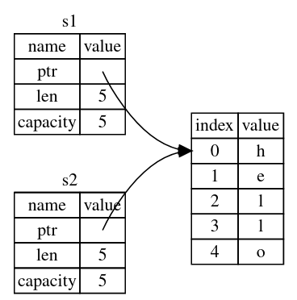
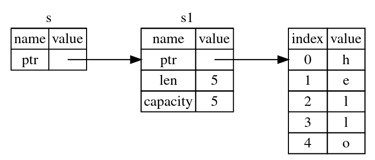

个人学习笔记
放在这里做备份用，低质量警告！
C 语言
大部分内容来源于
- 《C Primer Plus》
1 初识 C 语言
C语言标准：
- K&R C，经典 C
- ANSI C，ISO C，C89，C90
- C99
- C11
3 数据和 C
C99 新类型
_Bool a;
double _Complex b;
double _Imaginary c;
或者 #include <complex.h>
C99 可移植类型
#include <stdint.h>
int32_t i;
int_least8_t j;
int_fast8_t k;
intmax_t l;
#include <inttypes.h>
printf("%" PRId32 "\n", i);
浮点数的上溢和下溢
...
5 运算符、表达式和语句
运算符, 表达式, 语句
每个表达式都有一个值
6 C 控制语句：循环
逗号运算符
整个表达式的值是逗号右侧表达式的值
8 字符输入/输出和输入验证
-
缓冲输入/无缓冲输入
-
键盘模拟文件结尾:
- 大多数UNIX和Linux系统: 一行开始处Ctrl+D
- 许多微型计算机: 一行开始处Ctrl+Z
- 一些系统:任意位置的Ctrl+Z
-
命令行重定向
echo_eof < mywords > savewords
重定向 stdin 为 mywords, 重定向 stdout 为 savewords
10 数组和指针
数组指针/指针数组
int arr[2][3];
int(*p)[3] = arr;
void show(int array[][3], int rows);
const 指针与安全性
...
变长数组VLA
int n = 2, m = 3;
int arr[n][m];
void show(int n, int m, int array[n][m]);
复合字面量
(int[]){1, 2, 3};
11 字符串和字符串函数
数组与指针的区别
char s[] = "hello";
char* p = "world";
fgets() 和 fputs()
...
命令行参数
int main(int argc, char* argv[]) {}
其中 argv[0] 是程序本身的名称
12 存储类别、链接和内存管理
| 储存类别 | 储存期 | 作用域 | 链接 | 声明方式 | 其他 |
|---|---|---|---|---|---|
| 自动 | 自动 | 块 | 无 | 块内 (auto) | |
| 寄存器 | 自动 | 块 | 无 | 块内 register 请求 | 可作形参, 不能取地址 |
| 静态无链接 | 静态 | 块 | 无 | 块内 static | 默认初始化为0 |
| 静态内部链接 | 静态 | 文件 | 内部 | 所有函数外 static | 默认初始化为0 |
| 静态外部链接 | 静态 | 文件 | 外部 | 所有函数外 | 其他文件需要extern声明, 默认初始化0 |
| 动态内存分配 | 手动 | 手动 | - | 调用相关函数 |
| 限定符 | 说明 |
|---|---|
| const | *前表明不能改变指针所指向的值, *后表明指针不能指向别处(指针本身的值不变) |
| volatile | 告知编译器某一值可能被其他程序或线程改变, 阻止高速缓存优化 |
| restrict | 声明某一指针为访问所指向对象的唯一且初始的方式, 帮助编译器优化 |
| _Atomic | 多线程中的原子类型, 和原子操作配合使用 |
13 文件输入/输出
文本模式/二进制模式
某些（非常老的）OS上会以不同的形式存储文本文件和二进制文件。另外还有行结束符之类的问题。
fopen()的模式字符串：注意，在所有符合 POSIX 的系统上，模式参数 b 事实上没有任何效果
| 模式字符串 | 说明 |
|---|---|
| r | 读模式 |
| w | 写模式。把现有文件内容清空。如果文件不存在，则创建 |
| a | 写模式。在现有文件末尾添加。如果文件不存在，则创建 |
| r+ | 更新模式，可以读写 |
| w+ | 更新模式，可以读写。把现有文件内容清空。如果文件不存在，则创建 |
| a+ | 更新模式，可以读写。在现有文件末尾添加。如果文件不存在，则创建 |
| b | 附加在上面的模式上，使用二进制模式而非文本模式。 |
| x | C11 特性。附加在上面的模式上，如果文件已存在或以独占模式打开文件，则打开失败 |
随机访问: rewind() 函数 fseek() 和 ftell() 函数, fgetpos() 和 fsetpos() 函数
其他标准I/O函数: ungetc(): 把指定字符放回输入流, fflush(), setvbuf()
二进制I/O: fread() 和 fwrite()
区分EOF和读取错误 feof() ferror()
14 结构和其他数据形式
结构体的初始化
struct book {
char name[20];
float price;
};
struct book a = {"Cpp", 9.99};
struct book b = {
.name = "Cpppp",
.price = 19.99
};
struct box {
int num;
struct book inner;
};
struct box c = {1, {"cpp", 9.99}};
结构体直接拷贝
struct book apy = a;
结构作为函数参数/返回值, 或结构指针作为函数参数 优缺点
复合字面量
(struct book){"app", 99.99};
伸缩型数组成员
struct flex {
int num;
int scores[];
};
struct flex* p = malloc(sizeof(struct flex) + 5 * sizeof(int));
free(p);
联合, 匿名结构, 匿名联合
struct car {
int status;
union {
int num;
char c;
};
};
枚举
enum color { red, orange, yellow, green, blue };
enum color t = red;
switch (t) {
case red:
/* code */
break;
case orange:
/* code */
break;
default:
break;
}
函数指针
int fun() {
...
}
int (*f)() = fun;
// 用 typedef 简化
typedef int (*fn_t)();
15 位操作
位字段
struct box_props {
bool opaque : 1;
unsigned int fill_color : 3;
unsigned int : 4;
};
struct box_props prop;
prop.opaque = true;
prop.fill_color = 4;
对齐特性 C11
注意：对齐特性会影响结构体的大小, 设计结构体时要注意
size_t t = _Alignof(float);
_Alignas(4) char c1;
_Alignas(float) char c2;
16 C 预处理器和 C 库
预处理前: 翻译处理
-
字符扩展
-
反斜杠续行(物理行->逻辑行)
-
把文本划分呢为 预处理记号序列, 空白序列, 注释序列
用空格替换注释
宏
#undef
#ifdef
#if defined ()
#ifndef
#if
#elif
#endif
预处理阶段
#define PSQR(x) printf("the square of " #x " is %d.\n",((x)*(x)))
// 三者的区别:
#define XNAME(n) xn //XNAME(1)替换成xn
#define XNAME(n) x#n //XNAME(1)替换成 x"1"
#define XNAME(n) x##n //XNAME(1)替换成 x1
#define XNAME(n) x##n##x //XNAME(1)替换成 x1x
## 是双目运算符，用于拼接两侧的东西，gcc会检查拼接得到的东西是否是一个合法的 preprocessing token
变参宏
#define PR(X, ...) printf("Message " #X ": " __VA_ARGS__)
PR(1, "x=%lf\n", x);
| 预定义宏 | 含义 |
|---|---|
__DATE__ | 预处理的日期("MM DD YYYY"形式的字符串) |
__FILE__ | 当前源代码文件名(字符串) |
__LINE__ | 当前源代码文件中行号(整型) |
__STDC__ | 设置为1, 表明实现遵循C标准 |
__STDC_HOSTED__ | 本机环境设置为1, 否则设置为0 |
__STDC_VERSION__ | 支持C99标准, 设置为199901L; 支持C11标准, 设置为201112L |
__TIME__ | 翻译代码的时间("HH:MM:SS"形式的字符串) |
__func__ | 当前函数名 |
// 重置__LINE__和__FILE__报告的行号和文件名
#line 100
#line 200 "cool.c"
// 发出错误消息
#error Not C11
// 编译指示
#pragma
// 泛型选择C11
#define fun(X) \
_Generic((X), int : funi, float : funf, double : fund, default : fund)(X)
int funi(int arg) {
return arg * 2;
}
float funf(float arg) {
return arg * 2;
}
double fund(double arg) {
return arg * 2;
}
#define show(X) \
printf(_Generic((X), int : "%d\n", float : "%f\n", double : "%lf\n"), X)
// 内联函数C99
inline static void fun(){};
// 内联函数必须具有内部链接, 函数的定义与调用必须在同一文件(可以include)中
// 内联是建议性的, 编译器可能拒绝
// _Noreturn函数C11, 表明一个函数调用完成后不会返回主调函数
// exit() 和 atexit()
void clean(void){};
atexit(clean); // 注册clean函数, 可以注册多个函数(至少32个)
exit(); // 执行atexit()指定的函数, 执行顺序与添加顺序相反
// 断言库 assert.h
assert(断言为真的表达式);
#define NDEBUG // 写在包含assert.h的位置前面, 自动禁用断言
// _Static_assert 编译时断言
_Static_assert(整型常量表达式, 字符串);
//可变参数 stdarg.h
...
17 高级数据表示
...
建议将含有函数声明的 .h 文件 include 到定义函数的 .c 文件里，这样编译器就能检查声明和定义是否匹配。否则可能在编译和链接阶段 C 编译器都检查不出其不匹配。（对 C 语言来说非常必要，C++ 为了实现重载有 Name Mangling，因此一般能查出问题）
:warning: 以下内容可能仅是 GCC 的扩展，不符合 C 标准！
参考 http://blogger.popcnt.org/2008/03/useful-c-extensions-gcc-specific.html 等
嵌套函数
int main() {
int a = 9;
int plus() {
return a + 1;
}
}
在一个函数内嵌套定义另一个函数。内层函数可以使用 goto 跳转到外面，甚至允许使用外层函数内的变量，就像闭包一样。
参考：https://gcc.gnu.org/onlinedocs/gcc/Nested-Functions.html
- 如果嵌套函数没有引用外层函数的变量，它会被提升为普通函数。
- 如果嵌套函数引用了外层函数的变量，它的代码会被放在外层函数的栈上。因此调用它时，要求外层函数在运行中。且要求栈可执行。
圆括号包围的复合语句
圆括号包围的复合语句可以产生返回值，即最后一句的值。编写宏的时候常用
int a = ({
int b = 0;
b + 1;
});
Designated Initializers
https://gcc.gnu.org/onlinedocs/gcc/Designated-Inits.html
int a[6] = { [4] = 29, [2] = 15 };
// 等价于：
int a[6] = { 0, 0, 15, 0, 29, 0 };
范围赋值：
int widths[] = { [0 ... 9] = 1, [10 ... 99] = 2, [100] = 3 };
向前声明
void fun(int len; char arr[len], int len) {
//
}
提前声明 int len，以便定义 char arr[len]。并用分号与真正的参数列表分割
条件操作数省略
(x ? x : y)
等价于
(x ?: y)
如果表达式 x 有副作用，不希望它执行两遍，可以使用这种省略语法
#pragma once
指明 .h 只被包含一次。用于代替传统的：
#ifndef xxx
#define xxx
// ...
#endif
switch case 范围
用省略号表示范围。省略号前后需要有空格，范围不能重叠
case 8 ... 15:
// ...
case 'a' ... 'c':
// ...
attribute
种类很多
C++
Makefile
Makefile文件由一系列规则 (rules) 构成, 每条规则的形式如下
<目标> : <前置条件>
[tab]<命令>
目标是必须的, 前置条件和命令是可选的, 但是两者之中至少存在一个
目标 target
目标通常是文件名, 可以是一个或多个文件名(空格分隔), 也可以是某个操作的名字(伪目标)
为了避免操作名和已存在的文件名冲突, 可以将其声明为伪目标:
.PHONY: clean
clean:
rm *.o temp
如果make命令运行时没有指定目标, 默认执行第一个目标
前置条件 prerequisites
前置条件通常是一组文件名(空格分隔), 只要有一个前置文件不存在, 或者有过更新, 目标就需要重新构建
如果一个文件没有前置条件, 那么这个文件不存在时, make会调用命令(哪怕这个命令并不会实际构建出这个文件), 这个文件存在时, make就不会执行任何操作
命令 commands
命令由一行或多行shell命令组成, 每行命令之前必须有一个[tab]键
变量和赋值
# 递归扩展变量，用 = 赋值
a = hello
b = $(a)
a = world
# 此时 $(b) 为 world
# 简单扩展变量，用 := 赋值
a := hello
b := $(a)
a := world
# 此时 $(b) 为 hello
# 条件赋值 ?=
# 仅当该变量尚未定义时，进行赋值
a = hello
a ?= world
b ?= world
# 追加赋值 +=
a := hello
a += world
| 自动变量 | 含义 |
|---|---|
$@ | 当前目标 |
$< | 第一个前置条件 |
$^ | 所有前置条件 |
$? | 比目标更新的所有前置条件 |
| ... | ... |
模式匹配
allout = a.o b.o c.o
target : $(allout)
gcc -o $@ $^
%.o : %.c
gcc -o $@ -c $^
如以上代码所示，每次取出 allout 中的一个，匹配到 %.o 规则并构建
函数
a = *.c
# a 的值为 *.c ，并不会匹配和展开
a = $(wildcard *.c)
# 使用 wildcard 函数展开
b = $(patsubst %.c, %.o, $(a))
# patsubst 函数用于匹配和替换
c = $(addprefix app/, $(a))
# 给字符串中每个子串添加前缀
d = $(filter %.c, $(a))
# 滤出满足模式的字符串
e = $(filter-out %.c, $(a))
# 滤除满足模式的字符串
条件语法
条件判断有ifdef, ifndef, ifeq, ifneq
ifdef foo
...
else ifeq ($(a), hello)
...
else
...
endif
其他
以#开头表示注释
make会打印每条命令和注释再执行, 也叫回声(echoing), 用@开头的行关闭回声
ONESHELL
默认情况下, 每行命令在各自单独的shell中执行, 要使两行命令在同一个shell中执行, 有两种方法:
- 将两行命令写在一行(也可以写在两行, 在换行符前加反斜杠转义), 中间用分号分隔
- 加上
.ONESHELL:命令
test1 :
export foo=bar; echo "foo=[$$foo]"
test2 :
export foo=bar;\
echo "foo=[$$foo]"
.ONESHELL:
test3 :
export foo=bar
echo "foo=[$$foo]"
override
调用make时，可以指定和覆盖Makefile内变量值
$ make a=haha b=lala
若想避免被覆盖，可以在定义变量时加上override指令
override a = hello
CMake
大部分内容来源于
- https://zhuanlan.zhihu.com/p/371257515
CMake 自动生成的 Makefile 不仅可以通过 make 命令构建项目生成目标文件，还支持安装（make install）、测试安装的程序是否能正确执行（make test，或者ctest）、生成当前平台的安装包（make package）、生成源码包（make package_source）、产生 Dashboard 显示数据并上传等高级功能。
命令行
- 生成构建系统（生成 Makefile）
| 参数 | 含义 |
|---|---|
| -S | 指定源文件根目录，必须包含一个 CMakeLists.txt 文件 |
| -B | 指定构建目录，构建生成的中间文件和目标文件的生成路径 |
| -D | 指定变量，格式为-D <var>=<value>，-D后面的空格可以省略 |
cmake -B build -D CMAKE_BUILD_TYPE=Debug
- 执行构建
可以直接在构建目录下使用 make 命令，或者使用 cmake --build 构建目录 执行构建，常用参数有
| 参数 | 含义 |
|---|---|
| --target | 指定构建目标代替默认的构建目标，可以指定多个 |
| --parallel/-j [<jobs>] | 指定构建目标时使用的进程数 |
CMake 语法
CMake的命令有不同类型，包括脚本命令、项目配置命令和测试命令，细节可以查看官网cmake-commands。
CMake语言在项目配置中组织为三种源文件类型：
- 目录：CMakeLists.txt，针对的是一个目录，描述如何针对目录（Source tree）生成构建系统，会用到项目配置命令；
- 脚本：<script>.cmake，就是一个CMake语言的脚本文件，可使用
cmake -P直接执行，只能包含脚本命令； - 模块：<module>.cmake，实现一些模块化的功能，可以被前面两者包含，比如
include(CTest)启用测试功能。
注释
# 注释
#[[
注释块
注释块
]]
变量
使用set和unset命令设置或者取消变量
- 一般变量，可以是字符串，数字或者列表
set(AUTHOR Tom)
set(AUTHOR "Tom Cat")
set(NUM 30)
set(ARR to be or)
set(ARR to;be;or)
# 引用一般变量：`${<variable>}`，在`if()`条件判断中可以简化为只用变量名`<variable>`
- Cache 变量，一般用于提供配置选项，如果用户没有指定，则使用默认值
# set(<variable> <value>... CACHE <type> <docstring> [FORCE])
set(CVAR "Default cache value" CACHE STRING "A sample for cache variable")
# 引用 CACHE 变量：$CACHE{<varialbe>}
# Cache 变量会被保存在构建目录下的 CMakeCache.txt 中，缓存起来之后是不变的，除非重新配置更新
- 环境变量
# 修改当前进程的环境变量，设置和引用格式为：
set(ENV{<variable>} [<value>])
$ENV{<varialbe>}
- 内置变量
CMAKE_、_CMAKE或者以下划线开头后面加上任意 CMake 命令的变量。通过修改这些变量的值来配置 CMake 构建的行为
条件语句
- 字符串比较，比如：STREQUAL、STRLESS、STRGREATER等；
- 数值比较，比如：EQUAL、LESS、GREATER等；
- 布尔运算，AND、OR、NOT；
- 路径判断，比如：EXISTS、IS_DIRECTORY、IS_ABSOLUTE等；
- 版本号判断；等等；
- 使用小括号可以组合多个条件语句，比如：(cond1) AND (cond2 OR (cond3))。
对于常量：
- ON、YES、TRUE、Y和非0值均被视为
True； - 0、OFF、NO、FALSE、N、IGNORE、空字符串、NOTFOUND、及以"-NOTFOUND"结尾的字符串均视为
False。
对于变量，只要其值不是常量中为False的情形，则均视为True。
set(EMPTY_STR "")
if ((NOT EMPTY_STR) AND FLAG AND (NUM LESS 50) AND (NOT NOT_DEFINE_VAR))
message("The first if branch...")
elseif (EMPTY_STR)
message("EMPTY_STR is not empty")
else ()
message("All other case")
endif()
消息打印
message([<mode>] "message text" ...)
| 信息等级 <mode> | 说明 |
|---|---|
空或者NOTICE | 比较重要的信息 |
| DEBUG | 调试信息，主要针对开发者 |
| STATUS | 项目使用者可能比较关心的信息，比如提示当前使用的编译器 |
| WARNING | CMake警告，不会打断进程 |
| SEND_ERROR | CMake错误，会继续执行，但是会跳过生成构建系统 |
| FATAL_ERROR | CMake致命错误，会终止进程 |
列表操作
list 命令用于列表操作，有很多子命令：
APPEND，往列表中添加元素；LENGTH，获取列表元素个数；JOIN，将列表元素用指定的分隔符连接起来；
文件操作
file 命令用于文件操作，有很多子命令，可以读写、创建或复制文件和目录、计算文件hash、下载文件、压缩文件、递归查找文件等
# 查找 src/ 下所有 .c 文件
file(GLOB_RECURSE ALL_SRC src/*.c)
# 或者
aux_source_directory(src ALL_SRC)
配置文件生成
使用 configure_file 命令可以将 配置文件模板 中的特定内容替换，生成 目标文件。 输入文件中的@VAR@或者${VAR}在输出文件中将被对应的变量值替换。
例如有配置文件模板 version.h.in
#define VERSION "@VERSION@"
执行 CMake 脚本
set(VERSION 1.0.0)
configure_file(version.h.in "${PROJECT_SOURCE_DIR}/version.h")
得到 version.h
#define VERSION "1.0.0"
执行系统命令
execute_process(COMMAND bash "-c" "git rev-parse --short HEAD" OUTPUT_VARIABLE COMMIT_ID)
查找库文件
find_library(<VAR> name1 [path1 path2 ...])
找到的库就可以被其他target使用，表明依赖关系。
导入其他模块
include(CTest) # 将cmake文件或者模块加载并执行
CMake自带有很多有用的模块，官网链接：cmake-modules
项目配置
设置项目名称&版本号
project(CMakeTemplate VERSION 1.0.0 LANGUAGES C CXX)
CMake 会将版本号各值（major.minor.patch.tweak）分别赋值给以下变量
PROJECT_VERSION, <PROJECT-NAME>_VERSION
PROJECT_VERSION_MAJOR, <PROJECT-NAME>_VERSION_MAJOR
PROJECT_VERSION_MINOR, <PROJECT-NAME>_VERSION_MINOR
PROJECT_VERSION_PATCH, <PROJECT-NAME>_VERSION_PATCH
PROJECT_VERSION_TWEAK, <PROJECT-NAME>_VERSION_TWEAK
配合 configure_file 命令，可以方便地在代码中得到版本信息
指定C/C++标准
set(CMAKE_C_STANDARD 99)
set(CMAKE_CXX_STANDARD 11)
编译选项&编译类型
add_compile_options(-Wall -Wextra -pedantic -Werror) # 为所有编译器配置编译选项
set(CMAKE_C_FLAGS "${CMAKE_C_FLAGS} -pipe -std=c99") # 为 c 编译器配置
set(CMAKE_CXX_FLAGS "${CMAKE_CXX_FLAGS} -pipe -std=c++11") # 为 c++ 编译器配置
通过设置变量CMAKE_BUILD_TYPE来配置编译类型，可设置为：Debug、Release、RelWithDebInfo、MinSizeRel。一般在执行cmake命令的时候通过参数-D指定
可以针对不同的编译类型设置不同的编译选项，例如：
set(CMAKE_C_FLAGS_DEBUG "${CMAKE_C_FLAGS_DEBUG} -g -O0")
set(CMAKE_C_FLAGS_RELEASE "${CMAKE_C_FLAGS_RELEASE} -O2")
宏定义
添加全局的宏定义
add_definitions(-DDEBUG -DREAL_COOL_ENGINEER)
添加 include 目录
添加头文件的搜索目录
include_directories(src/c)
设置编译目标
编译目标 (target) 的类型包括静态库、动态库和可执行文件
- 编译为静态/动态库
使用命令 add_library(库名称 STATIC 所有源文件) 编译静态库，例如
file(GLOB_RECURSE MATH_SRC components/math/*.c)
add_library(math STATIC ${MATH_SRC})
指定为SHARED则编译为动态库
- 编译为可执行文件
add_executable(demo main/main.c) # (名称 所有源文件)
target_link_libraries(demo math) # 指定依赖的库
安装&打包&测试
https://zhuanlan.zhihu.com/p/371257515
模块化构建
CMakeLists.txt定义一个目录的构建系统。模块化构建就是分别为每一个子模块目录编写一个CMakeLists.txt，在父目录中导入子目录的构建系统的生成目标，以便在父目录中使用。
- 在子模块目录编写
CMakeLists.txt，目标设置为静态库 - 在父目录中导入子模块
add_subdirectory(components/math) # 导入子模块
add_executable(demo main/main.c) # 顶层目标
target_link_libraries(demo math) # 指定依赖的库（子模块）
通常，用 add_subdirectory 导入的子模块在项目的子目录下，例如子模块在
components/math下，那么编译产生的文件放在build/components/math下。如果子模块在项目外，就需要自行指定在build下存放的位置：add_subdirectory(source_dir [binary_dir] [EXCLUDE_FROM_ALL])
另外，也可以直接导入已编译好的目标文件：
add_library(math STATIC IMPORTED)
set_property(TARGET math PROPERTY IMPORTED_LOCATION "./lib/libmath.a")
Rust
大部分内容来源于
- https://github.com/KaiserY/trpl-zh-cn
rustc
编译器
cargo
创建新项目
cargo new name # 二进制 crate
cargo new --lib name # 库 crate
构建
发布配置：即编译的配置，有两个主要的配置，dev 和 release。
自定义发布配置：dev 和 release 都有默认的配置，可以在 Cargo.toml 中覆盖一部分的默认配置，例如：
[profile.dev]
opt-level = 0
[profile.release]
opt-level = 3
构建命令：
cargo build
cargo build --release
-
调试（debug）构建：默认的构建方法，采用
dev配置，可执行文件生成在./target/debug/项目名 -
发布（release）构建，采用
release配置，生成在target/release，发布构建会做更多优化，使代码运行得更快：
构建并运行：
cargo run
后面添加的参数会交给编译得到的程序
另外，可以使用 cargo check 快速检查代码是否能通过编译
测试
cargo test
更多信息见 测试.md
文档
cargo doc
构建当前 crate（包括所有依赖）的文档，放在 target/doc
cargo doc --open
构建文档并在浏览器中打开
install
使用 cargo install xxx 命令可以从 crates.io 安装二进制 crate，默认将可执行文件安装到 ~/.cargo/bin
自定义扩展命令
如果 PATH 中有类似 cargo-xxx 的可执行文件，就可以通过 cargo xxx 来运行
变量
rust 中的变量和函数使用 snake case 规范命名。
#![allow(unused)] fn main() { let x = 1; // 不可变变量 let mut v = 2; // 可变变量 const NUM: u32 = 12 * 2; // 常量，必须注明类型 }
变量不能声明在全局作用域中，常量可以
可以重复声明同名变量，这会隐藏（Shadowing）先前的变量
#![allow(unused)] fn main() { let x = 1; { let x = 12; println!("{x}"); // -> 12 } let x = x + 1; println!("{x}"); // -> 2 }
数据类型
- 标量（scalar）类型：整型、浮点型、布尔类型、字符类型
- 复合（compound）类型：元组、数组
整型
| 长度（bit） | 有符号 | 无符号 |
|---|---|---|
| 8 | i8 | u8 |
| 16 | i16 | u16 |
| 32 | i32 | u32 |
| 64 | i64 | u64 |
| 128 | i128 | u128 |
| arch（机器字长） | isize | usize |
| 字面值 | 说明 |
|---|---|
98_222 | 10进制 |
0xff | 16进制 |
0o77 | 8进制 |
0b1111_0000 | 2进制 |
b'A' | 字符（u8） |
整型溢出：在 debug 构建中，rust 会检查溢出并产生 panic。在 release 构建中，rust 不检查溢出。如果需要利用溢出行为，建议使用标准库的 Wrapping 类型。
浮点型
| 长度（bit） | 类型 |
|---|---|
| 32（单精度） | f32 |
| 64（双精度） | f64 |
布尔型
#![allow(unused)] fn main() { let b: bool = true; let b: bool = false; }
字符类型
#![allow(unused)] fn main() { let c: char = '😈'; }
char 类型的大小是4个字节，表示 Unicode 值
元组 tuple
长度和类型固定，类型不必相同
#![allow(unused)] fn main() { let tup: (i32, f32, u8) = (500, 1.0, b'A'); let tup = (1,); }
模式匹配和解构
#![allow(unused)] fn main() { let (x, y, z) = tup; let a = tup.0; }
不包含任何值的元组 ()，叫做单元（unit）元组。用于表示空值，如果一个表达式不返回任何值，则其隐式返回 ()。
数组 array
数组长度固定，在栈上分配
#![allow(unused)] fn main() { let a: [i32; 5] = [1, 2, 3, 4, 5]; let a = [3; 5]; // 5个3 }
索引。越界会引起 panic。
#![allow(unused)] fn main() { a[3]; }
高级特性
类型别名
#![allow(unused)] fn main() { type Kilometers = i32; type Result<T> = std::result::Result<T, std::io::Error>; }
类型别名不会创建出新的类型
never type
用 ! 表示。充当从不返回的函数的返回值。从不返回的函数也叫发散函数。例子有 continue，panic!，没有 break 的 loop 等。! 类型可以转为任意类型，于是可以保证 match 分支的类型匹配。
动态大小类型和 Sized trait
动态大小类型是在编译期不能确定大小的类型，例如 str、trait 对象。处理这种类型的方法是：必须将动态大小类型的值置于某种指针之后。例如 &dyn Trait、Box<dyn Trait>、Rc<dyn Trait>。
Sized trait 用于标识具有静态大小的类型，这个 trait 自动实现在编译期可以确定大小的类型上。Rust 隐式的为每一个泛型函数添加了 Sized bound，例如：
#![allow(unused)] fn main() { fn generic<T>(t: T) }
事实上为：
#![allow(unused)] fn main() { fn generic<T: Sized>(t: T) }
即限定了 T 必须是具有静态大小的类型。可以通过手动添加 ?Sized 以解除这个限制，同时也就必须用某种指针来处理这个类型：
#![allow(unused)] fn main() { fn generic<T: ?Sized>(t: &T) }
原始标识符
原始标识符允许你使用关键字作为变量/函数名，加上 r# 前缀即可，例如：
#![allow(unused)] fn main() { fn r#match() {..} let r#try = 1; }
在定义和使用时都要加 r#。主要用于与其他语言交互。
打印输出
println!
#![allow(unused)] fn main() { let a = 4; println!("{}", a); println!("{a}"); }
println! 宏会以不可变的形式借用变量。print! 同理。
#[derive(Debug)] struct Fun { num: u32, } fn main() { let f = fun { num: 1 }; println!("{:#?}", f); }
使用 {:?} 或 {:#?} 显示附加了 #[derive(Debug)] 的类型
eprintln!
eprintln! 和 eprint! 将输出到标准错误流
format!
和 print! 相同，但会把生成的字符串返回
dbg!
dbg! 接收一个表达式的所有权，打印所在文件和行号，以及表达式值，最后返回该值的所有权
#![allow(unused)] fn main() { let a = dbg!(12 * 3); }
dbg! 会输出到标准错误流 stderr。打印的对象需要派生 Debug trait。如果不希望 dbg! 取得变量的所有权，可以给它传递引用。
#[derive(Debug)] struct Fun { num: u32, } fn main() { let f = fun { num: 1 }; dbg!(&f); }
panic!
可以指定输出的信息
#![allow(unused)] fn main() { panic!("error in: {}", err); }
更多信息见 错误处理.md
占位
todo!
unimplemented!
unreachable!
测试常用宏
见 测试.md
表达式和语句
表达式计算出一个值，语句不返回值。函数调用、宏调用、用大括号创建的块是表达式。
#![allow(unused)] fn main() { let y = { let x = 3; x + 1 }; }
表达式（x + 1）的结尾没有分号。在表达式的结尾加上分号就变成了语句。
函数
#![allow(unused)] fn main() { fn add(x: i32, y: i32) -> i32 { println!("{} + {}", x, y); x + y } }
函数定义位置可以在调用位置之前或之后，只要在调用之处可见的作用域内即可。
函数的返回值为函数体最后一个表达式的值，使用 return 关键字可以提前返回。
允许在函数的参数位置上使用模式匹配：
#![allow(unused)] fn main() { fn print_coordinates(&(x, y): &(i32, i32)) { println!("Current location: ({}, {})", x, y); } }
注释
单行注释
#![allow(unused)] fn main() { // 单行注释... }
文档注释
- 以
///起始，注释说明其后的对象（函数等）
#![allow(unused)] fn main() { /// Adds one to the number given. /// /// # Examples /// /// ``` /// let arg = 5; /// let answer = my_crate::add_one(arg); /// /// assert_eq!(6, answer); /// ``` pub fn add_one(x: i32) -> i32 { x + 1 } }
- 以
//!起始，常用于注释当前crate或模块
cargo test 也会运行文档注释中的代码
高级特性
函数指针
可以将函数名作为函数指针使用，函数指针是具体类型，且实现了所有三个闭包 trait（Fn、FnMut 和 FnOnce），因此可以在所有需要闭包的地方使用函数指针。
#![allow(unused)] fn main() { fn add_one(x: i32) -> i32 { x + 1 } fn do_twice(f: fn(i32) -> i32, arg: i32) -> i32 { f(f(arg)) } do_twice(add_one, 1) }
与闭包不同的是，对于相同签名的函数，其函数指针具有相同类型。函数指针也可以作为返回值。
另外，元组结构体等对象的名称可以作为函数指针使用：
#![allow(unused)] fn main() { struct Demo(i32); let list: Vec<Demo> = (0..10).map(Demo).collect(); }
所有权
所有权（ownership）系统的主要目的在于管理堆上的数据。
- Rust 中每一个值都有一个所有者（owner）
- 值在任一时刻有且只有一个所有者
- 当所有者（变量）离开作用域（scope），这个值将被丢弃（调用
drop函数）
移动
#![allow(unused)] fn main() { let s1 = String::from("some"); let s2 = s1; println!("{},{}", s1, s2); // error: borrow of moved value: `s1` }
String 对象包含两个部分：
- 堆上的部分，长度可变的字符串
- 栈上的部分，指向字符串的指针、长度、容量
执行 s2 = s1 时，不会拷贝堆上的部分。并且在 s2 = s1 之后，s1 失效，不允许再使用。即产生了移动（move）操作。
克隆
如果确实需要拷贝堆上的数据，可以使用名为 clone 的通用函数。克隆（clone）操作后，原先的变量仍然可用。
#![allow(unused)] fn main() { let s1 = String::from("some"); let s2 = s1.clone(); println!("{},{}", s1, s2); }
拷贝
对于仅存储在栈上的数据，或者实现了 Copy trait 注解的类型，使用 = 会产生拷贝（copy）操作。拷贝后，原先的变量仍然可用。
#![allow(unused)] fn main() { let x = 5; let y = x; println!("{},{}", x, y); }
不允许自身或其任何部分实现了 Drop trait 的类型使用 Copy trait。实现 Copy 的类型有：
- 整型、浮点型、布尔型、字符类型
- 数组和元组，当且仅当其包含的类型都实现了
Copy
参数和返回值
参数和返回值的传递与赋值过程相同：
fn take_and_give_back(s: String) -> String { s } fn main() { let s1 = String::from("hello"); let s2 = take_and_give_back(s1); // s1 移动到函数内。函数返回值移动给 s2 } // s1, s2 离开作用域。s1 已被移动走，不做处理。s2 调用 drop。
引用和借用
引用（reference）类似于指针。引用允许你使用值但不获取其所有权。创建引用的行为称为借用（borrowing）。
fn get_len(s: &String) -> usize { s.len() } // 不会调用 drop fn main() { let s1 = String::from("hello"); let len = get_len(&s1); // s1 仍然可用 }
与引用相反的操作是解引用（dereferencing），使用
*运算符
可变引用
引用默认不可变。添加 mut 关键字创建可变引用。
#![allow(unused)] fn main() { fn change(s: &mut String) { s.push_str("some"); } }
#![allow(unused)] fn main() { let mut s = String::from("hello"); let r1 = &mut s; }
为了避免数据竞争，对于同一个对象，在同一时刻：
- 要么只有一个可变引用，没有其他引用
- 要么只有若干个不可变引用，没有可变引用
引用有效的范围是从声明的位置到最后一次使用，以此为标准来判断上面的“同一时刻”。
悬垂
在有指针的语言中，可能存在悬垂指针问题。指即针指向的对象已经被释放。Rust 通过声明周期机制保证引用不会处于悬垂状态。
slice
slice 类型允许你引用集合中一段连续的元素序列，而不用引用整个集合。slice 是引用。slice 对象包含首元素的引用和长度
#![allow(unused)] fn main() { let a = [1, 2, 3]; // [i32; 3] let s = &a[1..]; // &[i32] }
slice 可以是 mut 引用：
#![allow(unused)] fn main() { let mut a = [1, 2, 3]; // [i32; 3] let s = &mut a[1..]; // &mut [i32] s[0] = 99; }
字符串 slice
String 的 slice 类型为 &str：
#![allow(unused)] fn main() { let s = String::from("hello world"); let r = &s; // &String let all = &s[..]; // &str let hello = &s[0..5]; let world = &s[6..]; }

slice 对象包含首元素的引用和长度，如上图。字符串 slice range 的索引必须位于有效的 UTF-8 字符边界处，否则会导致 panic。字符串 slice 也可以是 mut 引用。
结构体
定义
类型名使用大驼峰规范。
#![allow(unused)] fn main() { struct User { active: bool, username: String, id: u64, } }
每一部分数据称为字段（field）。在结构体中存储引用需要用上生命周期特性。
实例化和访问语法：
#![allow(unused)] fn main() { let mut u1 = User { active: true, username: String::from("Tom"), id: 1, }; let a = u1.active; u1.id = 8; }
要么整体 mut，要么整体不可变。Rust 不允许只让一部分字段可变。
模式匹配和解构：
#![allow(unused)] fn main() { struct Point { x: i32, y: i32, } let p = Point { x: 0, y: 7 }; let Point { x: a, y: b } = p; let Point { x, y } = p; // 简写 if let Point { x: 0, y } = p {} // 检测值 if let Point { x: 0..=5, y } = p {} // 检测范围 if let Point { x: v @ 0, y } = p {} // 检测值的同时绑定变量 }
字段初始化简写
实例化时，如果作用域内有和字段名同名的变量（常见的情况是函数参数），可以简写：
#![allow(unused)] fn main() { let username = String::from("Tom"); let id = 1; let u1 = User { active: true, username, id, }; }
变量 username 会移动进入结构体示例，id 会拷贝进入。因此在 u1 创建之后 username 不再可用。
结构体更新语法
#![allow(unused)] fn main() { let u1 = User { active: true, username: String::from("Tom"), id: 1, }; let u2 = User { active: false, ..u1 }; }
用 u1 中的对应字段补足 u2 中缺失的字段。u1.username 被移动，u1.id 被拷贝。被移走的字段不再可用。
元组结构体
元组结构体有整体的名称，但没有字段名。
struct Point(i32, i32); fn main() { let origin = Point(0, 0); let x = origin.0; }
类单元结构体
没有字段的结构体。常用在需要在某个类型上实现 trait，但不需要存储数据时。
struct AlwaysEqual; fn main() { let subject = AlwaysEqual; }
关联函数和方法
关联函数是在结构体的上下文（impl）中定义的函数，方法是第一个参数为 self 的关联函数，self 代表调用该方法的结构体实例。
定义
#![allow(unused)] fn main() { struct Rectangle { width: u32, height: u32, } impl Rectangle { fn area(&self) -> u32 { self.width * self.height } fn square(size: u32) -> Self { Self { width: size, height: size, } } } }
在一个 impl 块中，Self 类型是 impl 块类型的别名。&self 是 self: &Self 的缩写，方法可以：
- 仅仅读取对象：
&self - 读写对象：
&mut self - 获取对象的所有权：
self
同一个类型可以定义多个 impl 块。
调用
#![allow(unused)] fn main() { r.area(); Rectangle::square(4); }
使用结构体名和 :: 来调用关联函数。
自动引用和解引用：当使用 obj.fun() 调用方法时，Rust 会自动为 obj 添加 &, &mut, * 以便使 obj 与方法签名匹配。
枚举
定义
结构体代表积类型，枚举代表和类型。
#![allow(unused)] fn main() { enum IpAddrKind { V4, V6, } let a = IpAddrKind::V4; }
将数据附加到枚举的成员上：
#![allow(unused)] fn main() { enum Message { Quit, Move { x: i32, y: i32 }, Write(String), ChangeColor(i32, i32, i32), } let a = Message::Move { x: 1, y: 2 }; let b = Message::Write(String::from("foo")); }
关联函数和方法
枚举也可以通过 impl 定义关联函数和方法。
Option
#![allow(unused)] fn main() { enum Option<T> { None, Some(T), } }
实例：
#![allow(unused)] fn main() { let a = Some(5); let b: Option<String> = None; // 这里需要声明类型（如果从下文不能推断出的话） }
在一些有 Null 的语言中，任何类型的变量都可能为空，极大影响了安全性。Rust 中没有 Null，而是通过 Option 枚举实现类似的功能，避免了空值的泛滥。确保在使用 T 类型的变量时其总是一个有效的值，而在可能出现空值的地方使用 Option<T>，强制要求处理其为空的情况，确保了安全。
控制流
if 表达式
注意 if 是表达式，它可以有返回值。
#![allow(unused)] fn main() { let x = if condition { println!("true!"); 1 } else { println!("false!"); 0 }; }
如果有大量的分支，建议使用 match。
loop 表达式
#![allow(unused)] fn main() { let x = loop { cnt += 1; if cnt > 10 { break cnt * 2; } }; }
如果存在嵌套循环，break 和 continue 作用于最内层的循环。可以在循环上指定循环标签，在 break 和 continue 时使用。
#![allow(unused)] fn main() { let x = 'label: loop { break 'label cnt * 2; }; }
while 循环
#![allow(unused)] fn main() { while cnt > 0 { println!("{}!", cnt); cnt -= 1; } }
for 循环
#![allow(unused)] fn main() { let mut a = [1, 2, 3, 4, 5]; for ele in &a { println!("{ele}"); } for ele in &mut a { *ele += 10; } for ele in a { println!("{ele}"); } }
根据 in 后的式子，隐式调用了 iter()，iter_mut()，into_iter()，得到迭代器。
获取下标的方法：
#![allow(unused)] fn main() { let v = vec!['a', 'b', 'c']; for (index, value) in v.iter().enumerate() { println!("{} is at index {}", value, index); } }
模式匹配
match 表达式
模式匹配。match 要求必须穷尽所有的情况
#![allow(unused)] fn main() { let num = match foo { Some(x) => x + 1, None => panic!(), }; }
其他细节：
#![allow(unused)] fn main() { _ => println!("nonzero"), // 用 _ 忽略匹配到的值 _ => (), // 用空元组表示什么也不做 1 | 2 | 3 => (), // 匹配多种情况 1..=10 => (), // 匹配范围 'a'..='j' => (), // 字符范围 v @ 0..=100 => (), // @ 指定范围的同时绑定 (a, .., b) => (), // .. 忽略若干个量 x if x%2 == 0 => (), // 匹配守卫（match guard） }
有关结构体和枚举的解构/匹配见 结构体.md
if let 控制流
用于处理只匹配一个模式而忽略其他值的情况：
#![allow(unused)] fn main() { let num = Some(1); if let Some(x) = num { // 只匹配 Some，忽略 None println!("num = {}", x); } }
还可以加 else 分支。
while let 条件循环
#![allow(unused)] fn main() { while let Some(a) = args.next() { println!("{}", a); } }
匹配成功则继续循环，适合从迭代器或其他容器中逐个取出元素
模块系统包括：
- 包（Packages）： Cargo 的一个功能，它允许你构建、测试和分享 crate。
- Crates ：一个模块的树形结构，它形成了库或二进制项目。
- 模块（Modules）和 use： 允许你控制作用域和路径的私有性。
- 路径（path）：一个命名例如结构体、函数或模块等项的方式
Crate
crate 是编译的最小的代码单位。crate 包含多个模块，模块构成树形结构。
crate 有两种形式：二进制项和库。
- 二进制项可以被编译为可执行程序，必须有一个
main函数 - 库没有
main函数，它提供一些函数之类的东西，供其他项目使用
包
包是提供一系列功能的一个或多个 crate。一个包会包含一个 Cargo.toml 文件，阐述如何构建这些 crate。一个包可以包含多个二进制 crate 项和一个可选的 crate 库。
根文件
my-project
├── Cargo.toml
└── src
└── main.rs
crate root 是一个源文件，编译器以它为起点，构建 crate。
src/main.rs是一个二进制 crate 的根文件，这个 crate 与包同名src/lib.rs（如果有的话）是一个库 crate 的根文件，这个 crate 与包同名- 在
src/bin下放置文件，可以创建更多二进制 crate。每个文件编译成一个独立的 crate
模块
- 编译 crate 时，编译器首先在 crate 根文件中寻找需要被编译的代码
- 在根文件中，可以用
mod关键字声明模块。例如使用mod xxx声明了一个模块，编译器会在这些地方寻找模块代码：mod xxx {...}大括号内的部分（内联）- 文件
src/xxx.rs - 文件
src/xxx/mod.rs
- 在根文件以外的文件中，可以定义子模块，例如在
src/xxx.rs中定义了mod yyy，编译器会在这些地方寻找子模块代码：mod yyy {...}大括号内的部分（内联）- 文件
src/xxx/yyy.rs - 文件
src/xxx/yyy/mod.rs
模块构成树形结构，就像文件系统一样。
访问
在 crate 内的任意位置，可以通过两种方式访问东西：
- 绝对路径
crate::xxx::yyy::something，以crate起始 - 相对路径，从当前模块开始，以
self、super或模块名开头
use
可以使用 use 关键字创建快捷方式，例如：
#![allow(unused)] fn main() { use crate::xxx::yyy::something // 之后可以直接使用 something }
通常，use 后的路径使用绝对路径，而且一般精确到模块和类型，但不精确到函数。函数采用 模块::函数() 的方式调用，保留其上的一层模块。
通过嵌套路径可以减少 use 行：
#![allow(unused)] fn main() { use std::{cmp::Ordering, io}; use std::io::{self, Write}; }
通过通配符导入所有公有项：
#![allow(unused)] fn main() { use std::collections::*; }
as
#![allow(unused)] fn main() { use std::fmt::Result; use std::io::Result as IoResult; }
可以使用 as 关键字起别名。常用于命名存在冲突的情况。
重导出
使用 use 可以把某个名称导入到当前作用域，但这对上层不可见。使用 pub use 可以使导入的名称对上层可见，就好像此名称就在此作用域内一样。
这使我们可以以一定的层次结构编写库，同时以“扁平”的方式对外呈现。
私有性
模块定义了 Rust 的私有性边界。子模块里的所有项，包括子模块本身，默认对其父模块私有（不可见）。要使一个模块公有（可见），需用 pub mod 声明。为了使一个公有模块内的成员公有，在声明前加 pub。父模块中的项总是对子模块公有。
可以使用 pub 使结构体/枚举定义公有。结构体的字段需添加 pub 才会公有，而只要枚举的定义公有，其所有内容都会公有。
示例
backyard
一个名为 backyard 的二进制 crate：
backyard
├── Cargo.toml
└── src
├── main.rs
├── garden.rs
└── garden
└── vegetables.rs
crate 根文件为 src/main.rs，内容为：
use crate::garden::vegetables::Asparagus; pub mod garden; // -> garden.rs fn main() { let plant = Asparagus {}; println!("I'm growing {:?}!", plant); }
src/garden.rs 内容为：
#![allow(unused)] fn main() { pub mod vegetables; // -> garden/vegetables.rs }
src/garden/vegetables.rs 内容为：
#![allow(unused)] fn main() { #[derive(Debug)] pub struct Asparagus {} }
restaurant
一个名为 restaurant 的库 crate：
restaurant
├── Cargo.toml
└── src
└── lib.rs
模块树：
crate
├── front_of_house
│ ├── hosting
│ └── serving
└── back_of_house
根文件 src/lib.rs 内容为：
#![allow(unused)] fn main() { /* 绝对路径和相对路径访问 */ mod front_of_house { pub mod hosting { pub fn add_to_waitlist() {} } mod serving { } } pub fn eat_at_restaurant() { crate::front_of_house::hosting::add_to_waitlist(); front_of_house::hosting::add_to_waitlist(); } }
这里 front_of_house 不需要加 pub，因为 crate::front_of_house 和 crate::eat_at_restaurant 在同一层级下，互相可见。
#![allow(unused)] fn main() { /* super 的使用 */ fn serve_order() {} mod back_of_house { fn fix_incorrect_order() { cook_order(); super::serve_order(); // 调用上层函数 } fn cook_order() {} } }
#![allow(unused)] fn main() { /* 结构体的私有性 */ mod back_of_house { pub struct Breakfast { pub toast: String, seasonal_fruit: String, } impl Breakfast { pub fn summer(toast: &str) -> Breakfast { Breakfast { toast: String::from(toast), seasonal_fruit: String::from("peaches"), } } } } pub fn eat_at_restaurant() { // 在夏天订购一个黑麦土司作为早餐 let mut meal = back_of_house::Breakfast::summer("Rye"); // 改变主意更换想要面包的类型 meal.toast = String::from("Wheat"); println!("I'd like {} toast please", meal.toast); // 如果取消下一行的注释代码不能编译； // 不允许查看或修改早餐附带的季节水果 // meal.seasonal_fruit = String::from("blueberries"); } }
#![allow(unused)] fn main() { /* 枚举的私有性 */ mod back_of_house { pub enum Appetizer { Soup, Salad, } } pub fn eat_at_restaurant() { let order1 = back_of_house::Appetizer::Soup; let order2 = back_of_house::Appetizer::Salad; } }
使用外部包
为了使用外部包 rand，在 Cargo.toml 中加入
rand = "0.8.3"
于是 cargo 从 crates.io 下载 rand 及其依赖，接下来可以将其导入：
#![allow(unused)] fn main() { use rand::Rng; }
标准库对于项目来说也是外部包，也需要通过 use 导入，不过不需要修改 Cargo.toml
将 Crate 发布到 crates.io
具体操作参考 the book
工作空间
用于管理多个协同开发的包，参考 the book
字符串，包括内置类型 str 和 标准库类型 String。它们都是 UTF-8 编码的。
字符串字面值
字符串字面值是静态的，也就是在整个程序运行期间一直存在。其类型为 &str，而且不能是 mut 引用。
#![allow(unused)] fn main() { let s = "hello"; // &str let sl = &s[..]; // &str let ss = &s; // &&str }
Deref 强制转换
&String 可以自动转换成 &str。因此函数参数建议使用 &str 替代 &String，这样可以扩大能接收的参数的范围。
原始字符串
#![allow(unused)] fn main() { let s = r"\n"; // \n let s = r#"ab"cd"#; // ab"cd }
# 可以加任意多对。
String
创建
new函数创建空字符串
#![allow(unused)] fn main() { let s = String::new(); }
- 实现了
Displaytrait 的类型可以使用to_string方法创建字符串，例如str：
#![allow(unused)] fn main() { let s = "hi".to_string(); }
from函数从字面值创建
#![allow(unused)] fn main() { let s = String::from("hi"); }
更新
- 使用
push_str方法附加
#![allow(unused)] fn main() { s.push_str("bar"); }
push方法附加单个字符（char）
#![allow(unused)] fn main() { s.push('H'); }
- 使用
+运算符
#![allow(unused)] fn main() { // + 的函数签名为： fn add(self, other: &str) -> String let s1 = "foo".to_string(); let s2 = "bar".to_string(); let s = s1 + "-" + &s2; // s1 不再可用，s2 仍有效 }
format!宏
format! 宏的工作原理与 print! 相同。format! 取参数的引用，不获取所有权。
#![allow(unused)] fn main() { let s1 = "foo".to_string(); let s2 = "bar".to_string(); let s = format!("{}-{}", s1, s2); // s1 和 s2 仍有效 }
索引
String 类型不支持使用下标来索引。因为 String 事实上是对 Vec<u8> 的封装，而 UTF-8 字符所占的字节数可变。按字节索引会产生严重的错误，而要按字符索引需要 O(n) 的时间，不符合索引操作通常的期望值 O(1)。
虽然不允许以 s[n] 的方式索引，但可以以 &s[n..m] 的方式获取 slice。slice 边界必须在合法的 UTF-8 字符边界处，否则会导致 panic。
遍历
chars方法返回 Unicode 标量值（char）的迭代器bytes方法返回每一个字节（u8）的迭代器
#![allow(unused)] fn main() { let s1 = "乐".to_string(); for i in s1.chars() { println!("{i}"); // -> 乐 } for i in s1.bytes() { println!("{i}"); // -> 228, 185, 144 } }
Vec<T> 允许存储多个相同类型的值，且在内存（堆）上顺序排列。
创建
new函数创建空 Vec
#![allow(unused)] fn main() { let v1: Vec<String> = Vec::new(); }
vec!宏创建
#![allow(unused)] fn main() { let v2 = vec!['b', 'a', 'c']; // Vec<char> }
更新
#![allow(unused)] fn main() { let mut v = Vec::new(); v.push(1); // pub fn push(&mut self, value: T) v.pop(); // pub fn pop(&mut self) -> Option<T> }
还有很多方法，可以查API文档
所有权
Copy 类型的变量会被拷贝进入 Vec。非 Copy 类型的变量会被移动进入 Vec，其所有权交给 Vec。
如果将值的引用插入 Vec，这些值本身将不会被移动进 Vec。但是这些引用指向的值必须至少在 Vec 有效时也是有效的。生命周期与引用有效性部分将会更多地讨论这个问题。
访问
常用的两种方式：
- 通过下标获取引用
&v[n]，越界会导致panic - 通过
get(n)方法获取引用，会得到Option
#![allow(unused)] fn main() { let v = vec![String::from("hi")]; let s1 = &v[0]; // &mut 得到可变引用 let s2 = match v.get(0) { // get_mut 得到可变引用 Some(s) => s, None => panic!(), }; }
注意遵循借用规则，下面的代码不能通过编译：
#![allow(unused)] fn main() { let mut v = vec![1, 2, 3]; let i = &v[0]; // 不可变引用 v.push(4); // 可变引用 println!("{i}"); // 添加元素可能导致内存重新分配，使原引用失效 }
另外，也可以用 v[n] 的方式直接访问其中元素，但不允许将其中元素移动出来。
slice
Vec 可以转换为 slice
遍历
- 使用
for i in &v得到不可变引用 - 使用
for i in &mut v得到可变引用 - 使用
for i in v隐式调用into_iter()，会导致移动
HashMap<K, V> 以键值对的形式将数据存储在堆上。
创建
HashMap 没有被 prelude 自动引用，需要 use 导入
#![allow(unused)] fn main() { use std::collections::HashMap; }
new方法创建
#![allow(unused)] fn main() { let mut m = HashMap::new(); }
- 在键值对元组的 vector 上使用迭代器和
collect方法
#![allow(unused)] fn main() { let teams = vec!["Blue".to_string(), "Yellow".to_string()]; let initial_scores = vec![10, 50]; let mut scores: HashMap<_, _> = teams.into_iter().zip(initial_scores.into_iter()).collect(); }
collect 可以输出很多种数据结构，因此 HashMap<_, _> 类型注解是必须的，但是键值对的类型可以用下划线占位，编译器能推断出。
更新
insert插入键值对，如果已存在则覆盖
#![allow(unused)] fn main() { m.insert("hi".to_string(), 10); }
- 只在不存在时插入
#![allow(unused)] fn main() { m.entry("hi".to_string()).or_insert(10); }
entry 方法返回 Entry 枚举，表示可能存在的值，其上的 or_insert 方法在值不存在时将参数作为值插入，并返回值的可变引用
- 根据旧值更新一个值
#![allow(unused)] fn main() { /* 统计单词个数 */ let text = "hello world wonderful world"; let mut map = HashMap::new(); for word in text.split_whitespace() { let count = map.entry(word).or_insert(0); *count += 1; } }
访问
使用 get 方法，返回 Option<V>
#![allow(unused)] fn main() { let v = m.get(&String::from("hi")); }
遍历
#![allow(unused)] fn main() { for (k, v) in &m { // ... } }
使用 &mut m 后，仅 v 会是可变引用。直接使用 m 会导致 m 被移动走。遍历的顺序是随机的。
Rust 没有异常系统。Rust 将错误分为两类：可恢复的（recoverable）和 不可恢复的（unrecoverable）。
可恢复的错误例如文件未找到。不可恢复的错误如下标越界，这往往是出现bug的征兆。
Rust 用 Result<T, E> 类型处理可恢复的错误，用 panic! 宏在遇到不可恢复的错误时停止执行。
panic!
出现 panic! 时，程序默认会进行展开（unwinding），即回溯和清理栈上的数据。另外也可以选择直接终止（abort）程序。在 Cargo.toml 的 [profile] 部分添加 panic = 'about' 即可采用终止方式。
设置 RUST_BACKTRACE=1 环境变量后即可查看发生 panic 的函数调用回溯。
Result
#![allow(unused)] fn main() { enum Result<T, E> { Ok(T), Err(E), } }
可以使用 match 来处理，例如：
#![allow(unused)] fn main() { let f = match File::open("hello.txt") { Ok(f) => f, Err(e) => panic!("{:?}", e), }; }
可以用 Result 上的 unwrap 函数处理，如果 Result 是 Ok，unwrap 返回其中的值，否则调用 panic!。expect 函数与 unwrap 类似，不过可以指定报错信息：
#![allow(unused)] fn main() { let mut f = File::open("hello.txt").unwrap(); let mut f = File::open("hello.txt").expect("Failed to open hello.txt"); }
错误传播
在函数中遇到错误，将其传递给上层调用者是一种常见的操作。一种直观的写法是使用 match：
#![allow(unused)] fn main() { fn read_file_into_string() -> Result<String, io::Error> { let mut f = match File::open("hello.txt") { Ok(f) => f, Err(e) => return Err(e), }; let mut s = String::new(); match f.read_to_string(&mut s) { Ok(_) => Ok(s), Err(e) => return Err(e), } } }
为了减少样板代码，可以使用 ? 运算符，其作用与上面的 match 相同：
#![allow(unused)] fn main() { fn read_file_into_string() -> Result<String, io::Error> { let mut f = File::open("hello.txt")?; let mut s = String::new(); f.read_to_string(&mut s)?; Ok(s) } }
还可以通过链式调用，使代码更简洁：
#![allow(unused)] fn main() { fn read_file_into_string() -> Result<String, io::Error> { let mut s = String::new(); File::open("hello.txt")?.read_to_string(&mut s)?; Ok(s) } }
另外，? 运算符也可以用在 Option 上。
main 函数
main 函数的返回值可以是 Result<(), Box<dyn std::error::Error>>，这就允许 main 函数返回错误。可执行程序最终会向操作系统返回合适的整数。
泛型函数
#![allow(unused)] fn main() { fn fun<T>(v: T) -> T { v } }
注意：泛型参数通常不能在返回值上使用，因为泛型参数表示这是一个可以由调用者决定的类型，而返回值的类型一般可以从函数体推断出，例如这就是一个非法的定义：
#![allow(unused)] fn main() { fn fun<T>() -> T { 1 } }
泛型结构体/枚举
#![allow(unused)] fn main() { enum Option<T> { None, Some(T), } struct Point<T> { x: T, y: T, } }
方法中的泛型
#![allow(unused)] fn main() { impl<T> Point<T> { // 这里可以添加 trait bound fn x(&self) -> &T { &self.x } fn fun<U>(&self) -> U { // 追加泛型参数 todo!() } } // 也可以针对具体类型定义 impl Point<f32> { fn distance(&self) -> f32 { (self.x.powi(2) + self.y.powi(2)).sqrt() } } }
泛型不会带来性能损失，因为 Rust 采用一种称为“单态化”的技术将泛型转化成具体类型来处理，函数会静态分发。也因此泛型类型参数一次只能替代一个具体类型。
生命周期
生命周期是一种泛型。声明周期代表变量/引用有效的范围。例如：
#![allow(unused)] fn main() { let r; { let x = 5; r = &x; } println!("{}", r); }
变量 x 的生命周期（可以用 'a 表示）即从其声明到右大括号。Rust 借用检查器要求引用的生命周期不大于对应变量的生命周期。因此这段代码不能通过编译。
函数中的生命周期注解
从两个字符串中找出较长的一个的函数：
#![allow(unused)] fn main() { fn longer<'a>(s1: &'a str, s2: &'a str) -> &'a str { if s1.len() > s2.len() { s1 } else { s2 } } }
这里使用生命周期注解 'a，表明返回的引用依赖于（指向）参数 s1 和 s2，因此返回的引用的生命周期为 s1 和 s2 的生命周期重叠的部分
函数或方法的参数的生命周期被称为输入生命周期，而返回值的生命周期被称为输出生命周期。在一些情况下可以省略生命周期标注：
- 函数仅有一个输入生命周期，则所有输出生命周期与其相同
- 函数是方法，则所有输出生命周期默认与
self相同
结构体中的生命周期注解
#![allow(unused)] fn main() { struct Fun<'a> { s: &'a str, i: usize, } impl<'a> Fun<'a> { fn new(s: &str) -> Fun { Fun { s, i: s.len() } } } }
Fun 含有对其他对象的引用，其生命周期依赖于其他对象，因此需要生命周期注解。Fun 对象的生命周期不能比借来的对象 s 更长
静态生命周期
字符串字面量具有静态生命周期
#![allow(unused)] fn main() { let s: &'static str = "I have a static lifetime."; }
Trait
定义
trait 类似其他编程语言中的接口
#![allow(unused)] fn main() { trait Show { fn show(&self) -> String; } }
#![allow(unused)] fn main() { trait Comparable { fn bigger_than(&self, b: &Self) -> bool; // trait impl 到什么类型上，Self 就是什么类型 } }
可以定义方法的默认实现：
#![allow(unused)] fn main() { trait Show { fn show(&self) -> String { String::new() } } }
可以在一个 trait 中定义多个方法，它们之间可以互相调用。
为类型实现 trait
#![allow(unused)] fn main() { struct Point { x: i32, y: i32, } impl Show for Point { fn show(&self) -> String { format!("({}, {})", self.x, self.y) } } }
为类型实现 trait 时，要么类型，要么 trait 要位于本地作用域内。不允许为外部类型实现外部 trait，例如在自己的程序中为标准库类型 Vec<T> 实现标准库 trait Display。这个限制称为“相干性”或“孤儿规则”。
甚至可以对泛型实现 trait。例如，标准库对所有 Display 的类型实现了 ToString
#![allow(unused)] fn main() { impl<T: Display> ToString for T { ... } }
#![allow(unused)] fn main() { impl<T: PartialOrd> Comparable for T { fn bigger_than(&self, b: &Self) -> bool { self > b } } }
trait 参数/返回值
用 trait 限定函数泛型参数的类型，以便于在函数中调用 trait 提供的方法。有两种语法：
impl Trait语法
#![allow(unused)] fn main() { fn fun(item: &impl Show) { println!("{}", item.show()); } }
也可以在返回值上使用
traitbound 语法
#![allow(unused)] fn main() { fn fun<T: Show>(item: &T) { println!("{}", item.show()); } }
注意：这种语法通常不能在返回值上使用，原因见 泛型.md
指定多个 trait 时，用加号连接：
#![allow(unused)] fn main() { fn fun(item: &(impl Show + Display)) fn fun<T: Show + Display>(item: &T) }
另外，可以用 where 语法避免过长的签名
#![allow(unused)] fn main() { fn some_function<T, U>(t: &T, u: &U) -> i32 where T: Display + Clone, U: Clone + Debug ... }
注意：这里是通过“单态化”实现的，函数静态分发，泛型类型参数一次只能替代一个具体类型。
高级特性
关联类型
关联类型是一个占位符类型，例如：
#![allow(unused)] fn main() { pub trait Iterator { type Item; fn next(&mut self) -> Option<Self::Item>; } }
关联类型与泛型参数的区别在于：trait 有泛型参数时，在同一个类型上，可以多次以不同泛型类型实现这个 trait，且在调用 trait 方法的时候也不得不加上类型注解。
运算符重载
可以重载 std::ops 中列出的运算符，例如加法：
#![allow(unused)] fn main() { impl Add for Point { type Output = Point; fn add(self, rhs: Self) -> Self::Output { Self { x: self.x + rhs.x, y: self.y + rhs.y, } } } }
默认泛型类型参数
定义 trait 时可以为泛型参数指定默认类型，例如：
#![allow(unused)] fn main() { pub trait Add<Rhs = Self> { // 默认情况下，加法运算实现在两个相同的类型上 type Output; fn add(self, rhs: Rhs) -> Self::Output; } }
完全限定语法和消歧义
- 如果 trait 和类型上的方法重名，可以通过以下语法消歧义（也可以使用后面的完全限定语法）：
#![allow(unused)] fn main() { trait Pilot { fn fly(&self); } trait Wizard { fn fly(&self); } struct Human; impl Pilot for Human {..} impl Wizard for Human {..} impl Human { fn fly(&self) {..} } }
#![allow(unused)] fn main() { let person = Human; Pilot::fly(&person); Wizard::fly(&person); person.fly(); }
- 如果 trait 和类型上的关联函数重名，可以使用完全限定语法：
#![allow(unused)] fn main() { trait Animal { fn baby_name() -> String; } struct Dog; impl Dog { fn baby_name() -> String {..} } impl Animal for Dog {..} }
#![allow(unused)] fn main() { Dog::baby_name() <Dog as Animal>::baby_name() }
父 trait
可以定义基于其他 trait 的 trait。例如定义一个 OutlinePrint trait，基于 Display trait，提供 outline_print 方法，在打印值的前后加上星号，那么只有在实现了 Display 的类型上才能实现 OutlinePrint
#![allow(unused)] fn main() { trait OutlinePrint: Display { fn outline_print(&self) { let output = self.to_string(); println!("* {} *", output); } } }
newtype 模式
为了在外部类型上实现外部 trait，可以使用一种叫 newtype 模式的设计方法。即用元组结构体包装目标类型，然后在新类型上实现：
#![allow(unused)] fn main() { struct Wrapper(Vec<String>); impl fmt::Display for Wrapper {..} }
这样做的缺点是新类型不能直接使用原类型上的各种方法。可以考虑使用 Deref trait 解决这个问题。
测试模块和测试函数
#![allow(unused)] fn main() { #[cfg(test)] mod tests { use super::*; #[test] fn it_works() { assert_eq!(2 + 2, 4); } } }
调用 cargo test 以运行所有测试函数。可以添加任意多的测试模块和测试函数
测试常用宏
#![allow(unused)] fn main() { assert!(true); assert_eq!(2 + 2, 4); assert_ne!(2 + 2, 5); }
这几个宏可以提供更多的参数，将作为 panic 时的信息打印出来。
assert_eq! 和 assert_ne! 事实上使用了 == 和 !=，并在失败时打印其值。因此被测试的值必须实现了 PartialEq 和 Debug trait。这两个 trait 都是可派生的 trait，因此可以直接在类型上添加 #[derive(PartialEq, Debug)] 注解。
should_panic 注解
#![allow(unused)] fn main() { #[test] #[should_panic] fn it_works() { // ... } }
添加 should_panic 注解，表明一个测试应当引发 panic。另外为了避免意外的 panic 使测试通过，可以添加期望的 panic 信息
#![allow(unused)] fn main() { #[should_panic(expected = "foobar")] // 实际 panic 信息需要包含 "foobar" }
Result<T, E>
测试函数可以返回 Result 作为测试结果：
#![allow(unused)] fn main() { #[test] fn it_works() -> Result<(), String> { if 2 + 2 == 4 { Ok(()) } else { Err(String::from("two plus two does not equal four")) } } }
cargo test
- 向
cargo test传递参数，例如：cargo test --help - 向
cargo test生成的测试程序传递参数，放在--分隔符后，例如：cargo test -- --help
并行控制
测试程序默认并行运行各个测试函数。可以通过参数设置并行线程数：
cargo test -- --test-threads=1
输出控制
测试程序默认屏蔽测试函数的任何标准输出。可以通过参数允许输出：
cargo test -- --show-output
部分测试
默认情况下会运行全部的测试函数。可以通过测试模块名和测试函数名指定运行一部分测试：
cargo test my_test1
忽略部分测试
可以给（非常耗时的）测试函数添加 ignore 属性，默认排除他们
#![allow(unused)] fn main() { #[test] #[ignore] fn it_works() { // ... } }
cargo test # 运行没被忽略的测试
cargo test -- --ignored # 运行被忽略的测试
cargo test -- --include-ignored # 运行全部测试
测试的组织结构
测试通常分为两类：
- 单元测试：更小而更集中，一次测试一个模块，或私有接口
- 集成测试：就像外部代码一样，只测试公有接口
单元测试
单元测试的方法即上面所述的，创建测试模块和测试函数。单元测试与被测试的代码放在相同文件中。
集成测试
集成测试对于被测试的库来说完全是外部的。为了创建继承测试，需要在项目根目录下创建一个 tests 目录，与 src 同级。可以在这个目录下创建任意多的测试文件，每个测试文件会被当作一个 crate 来编译。下面是一个集成测试文件的例子：
#![allow(unused)] fn main() { use adder; #[test] fn it_adds_two() { assert_eq!(4, adder::add_two(2)); } }
可以在 tests 目录下创建目录，以创建可以被集成测试使用的子模块
二进制 crate 的集成测试
二进制 crate 通常没有暴露的接口，无法进行集成测试。因此二进制 crate 往往采用这样的结构：在一个包内包含一个库 crate 和一个二进制 crate。对库 crate 进行集成测试，二进制 crate 的 src/main.rs 调用库的功能，其自身尽可能简单。
闭包
定义
#![allow(unused)] fn main() { fn add_one_v1 (x: u32) -> u32 { x + 1 } // 函数 let add_one_v2 = |x: u32| -> u32 { x + 1 }; // 闭包 let add_one_v3 = |x| { x + 1 }; let add_one_v4 = |x| x + 1 ; }
闭包一般不需要注明参数和返回值类型，编译器会自动推断。如果闭包函数体只有一行，可以不加大括号
与函数类似，允许在参数位置上使用模式匹配
捕获
闭包可以捕获其所在环境中的变量。有三种捕获形式：
- 获取不可变引用
- 获取可变引用
- 获取所有权
编译器会根据闭包内的情况自动分析每个变量的捕获形式。在参数列表前添加 move 关键字可以强制获取所有权
类型和 trait
每个闭包都具有独有的类型，即使他们的签名一样，类型也不同。闭包（包括普通函数）都实现了 Fn 系列的 trait。Fn 系列的 trait 包括 Fn、FnMut、FnOnce。
- 如果闭包以获取所有权的方式捕获了环境中的值，则其只能被调用一次，实现
FnOnce。 - 如果闭包获取可变引用，则其实现
FnMut和FnOnce。 - 如果闭包获取不可变引用或者不捕获变量，则其实现
Fn、FnMut、FnOnce。 - 如果闭包没有捕获任何变量，则其类型可以转为函数指针
fn，这样的闭包之间可以有相同的类型
注意：move 关键字不会影响闭包实现了什么 trait
Fn 系列的 trait 带有泛型参数，写法比较特别，例如 Fn(i32) -> i32：
#![allow(unused)] fn main() { fn exe<T>(f: T, x: i32) -> i32 where T: Fn(i32) -> i32, { f(x) } }
高级特性
返回闭包
- 直接返回闭包
#![allow(unused)] fn main() { fn foo1(a: i32) -> impl Fn(i32) -> i32 { move |x| x + a } fn foo2(b: bool) -> impl Fn(i32) -> i32 { // 也可以换成 fn(i32) -> i32 if b { |x| x + 1 // 没有捕获变量，可以转为函数指针，因此可以在不同的分支里返回不同的闭包 } else { |x| x + 2 } } }
- 使用 trait 对象
#![allow(unused)] fn main() { fn returns_closure() -> Box<dyn Fn(i32) -> i32> { Box::new(|x| x + 1) } }
迭代器
迭代器都实现了 Iterator trait，这个 trait 大致上为：
#![allow(unused)] fn main() { pub trait Iterator { type Item; // trait 的关联类型 fn next(&mut self) -> Option<Self::Item>; } }
注意迭代器一般需要是 mut 的才可正常使用。next 方法会“消费”迭代器中的内容。
迭代器是惰性的。Rust 提供零成本抽象，即迭代器的性能与普通手写循环相同，甚至更快。
创建迭代器
创建迭代器的三种方法：
#![allow(unused)] fn main() { let mut v = vec![1, 2, 3, 5]; let mut i1 = v.iter(); // 获取 &self next 得到 Option<&i32> let mut i2 = v.iter_mut(); // 获取 &mut self next 得到 Option<&mut i32> let mut i3 = v.into_iter(); // 获取 self next 得到 Option<i32> }
for 循环
#![allow(unused)] fn main() { for i in &v for i in &mut v for i in v }
对应上面的三种创建迭代器方法
消费适配器
迭代器上有一类基于 next 的方法，称为消费适配器。例如 sum()：
#![allow(unused)] fn main() { let sum: i32 = vec![1, 2, 3].iter().sum(); }
迭代器适配器
迭代器上有一类方法，可以将迭代器转化为另一个迭代器，称为迭代器适配器。例如 map()：
#![allow(unused)] fn main() { let a = vec![1, 2, 3].into_iter().map(|x| x + 1); }
例如 filter()：
#![allow(unused)] fn main() { let target = 10; let a = vec![10, 8, 23].into_iter().filter(|x| *x > target); }
zip()：把两个迭代器合并成一个迭代器，每个元素是元组 (a,b) 形式
自定义迭代器
可以把 Iterator trait 实现到自定义的类型上，只需要指定关联类型、实现 next() 方法即可。这样就可以创建自定义的迭代器。
Range
一类常用的迭代器
#![allow(unused)] fn main() { let mut r1 = 0..10; // 0,1,..,9 let mut r2 = 0..=10; // 0,1,..,10 }
指针除了引用数据以外没有其他功能。智能指针是一类数据结构，他们的表现类似指针，但是拥有额外的元数据和功能。
在 Rust 中，普通引用（指针）和智能指针的另一个区别是，引用是一类只借用数据的指针，而智能指针通常拥有他们指向的数据。
智能指针区别于常规结构体的特性在于其实现了 Deref 和 Drop trait。Rust 中的智能指针例如 String （str 的智能指针）和 Vec<T>（[T] 的智能指针）。
Box<T>
最基本的智能指针，允许将值放在堆上而不是栈上。栈上只存放指针。常用于：
- 当有一个在编译时未知大小的类型，而又想要在需要确切大小的上下文中使用这个类型值的时候
- 当有大量数据并希望在确保数据不被拷贝的情况下转移所有权的时候
- 当希望拥有一个值并只关心它的类型是否实现了特定 trait 而不是其具体类型的时候
可以通过 Box<T> 得到指向对象的可变/不可变引用。当 Box 离开作用域时，将释放其自身和其指向的对象。
递归类型
Rust 中需要借助 Box<T> 才能创建递归类型。例如一个链表：
#![allow(unused)] fn main() { enum List { Cons(i32, Box<List>), Nil, } let l = Cons(1, Box::new(Cons(2, Box::new(Nil)))); }
Deref trait
智能指针需要实现的 trait，它重载了解引用运算符，使得智能指针可以像普通指针一样使用
#![allow(unused)] fn main() { pub trait Deref { type Target: ?Sized; fn deref(&self) -> &Self::Target; // 注意这里返回的是引用，为了避免将所有权移动出去 } }
对一个实现 Deref 的对象 b 使用解引用运算符时，会发生这样的替换：*b 替换为 *(b.deref())。注意外面仍有一个解引用运算符，因为 deref() 返回的是目标对象的引用。
与其叫
deref，不如叫desmart。因为这个函数把智能指针转换成普通指针（引用）
Deref 强制转换
Rust 会在实现了 Deref trait 的类型上自动调用任意次的 deref()，以使类型匹配：
#![allow(unused)] fn main() { fn fun(s: &str) { todo!() } let b = Box::new(String::new()); fun(&b); // &Box<String> -> &String -> &str }
DerefMut trait
#![allow(unused)] fn main() { pub trait DerefMut: Deref { fn deref_mut(&mut self) -> &mut Self::Target; } }
用于从可变的智能指针获得对象的可变引用
Drop trait
drop trait 允许我们在值要离开作用域时执行一些代码，例如释放内存、文件、网络资源等。智能指针都实现了 Drop。
#![allow(unused)] fn main() { pub trait Drop { fn drop(&mut self); } }
drop() 方法不允许手动调用。如果需要提前释放资源，可以使用 std::mem::drop 函数（包含在 prelude 中）：
#![allow(unused)] fn main() { drop(x); }
Rc<T> 引用计数
注意 Rc<T> 只能用于单线程场景
enum List { Cons(i32, Rc<List>), Nil, } use crate::List::{Cons, Nil}; use std::rc::Rc; fn main() { let a = Rc::new(Cons(5, Rc::new(Cons(10, Rc::new(Nil))))); let b = Cons(3, Rc::clone(&a)); let c = Cons(4, Rc::clone(&a)); }
这创建了一个如下所示的链表：

Rc<T> 的 clone 与大多数类不同，不会进行深拷贝，仅会浅拷贝并增加计数。常用 Rc::clone(&a) 而不是 a.clone() 以体现其中的区别。Rc<T> 被 drop() 时计数减少。计数为零时释放资源
由于可以有多个 Rc<T> 指向同一对象，Rc<T> 没有实现 DerefMut，不允许通过 Rc<T> 对对象进行可变访问。
RefCell<T>
RefCell<T> 与 Box<T> 一样，只能有单一所有者。RefCell<T> 只能用于单线程场景。RefCell<T> 的特点是允许在运行时执行借用检查，而且即使在 RefCell<T> 本身不可变的情况下仍允许改变其内部的值，即内部可变性模式。如果在运行时违反了借用规则，会产生 panic。
#![allow(unused)] fn main() { let s = String::new(); let sr = RefCell::new(s); sr.borrow_mut().push_str("hi"); println!("{}", sr.borrow()); }
borrow 方法返回 Ref<T> 类型的智能指针，borrow_mut 方法返回 RefMut<T> 类型的智能指针。RefCell<T> 会记录当前有多少个活动的 Ref<T> 和 RefMut<T> 智能指针，以此执行运行时的借用检查，有少量性能损失。
Rc<T> + RefCell<T>
为了解决 Rc<T> 不能可变访问的问题，常常结合使用 Rc<T> 和 RefCell<T>：
#![allow(unused)] fn main() { enum List { Cons(Rc<RefCell<i32>>, Rc<List>), Nil, } }
引用循环
在 Rust 中，引用循环会导致内存泄漏。例如：
#![allow(unused)] fn main() { #[derive(Debug)] struct Node(Option<RefCell<Rc<Node>>>); let a = Rc::new(Node(Some(RefCell::new(Rc::new(Node(None)))))); let b = Rc::new(Node(Some(RefCell::new(a.clone())))); if let Some(r) = &a.0 { *r.borrow_mut() = b.clone(); } println!("{:?}", a); // 会导致栈溢出 }
一种解决方案是重新组织数据结构，使得一部分引用拥有所有权而另一部分没有。具体参考 the book
创建新线程
使用 thread::spawn() 创建新线程，参数是一个闭包：
#![allow(unused)] fn main() { let handler = thread::spawn(|| { for i in 0..10 { println!("spawn:{i}"); thread::sleep(Duration::from_millis(1)); } }); // do something ... handler.join().unwrap(); }
注意主线程结束时会强制终止新线程，使用 join() 避免这一点
move 闭包
#![allow(unused)] fn main() { let v = vec![1, 2, 3]; let handle = thread::spawn(move || { println!("Here's a vector: {:?}", v); }); handle.join().unwrap(); }
使用 move 闭包把捕获的值移动进新线程中，否则会有生命周期问题
消息传递
#![allow(unused)] fn main() { let (tx, rx) = mpsc::channel(); // 创建信道 thread::spawn(move || { tx.send(String::from("hi")).unwrap(); // 发送 }); println!("receive: {}", rx.recv().unwrap()); // 接收，阻塞 }
mpsc 是多个生产者，单个消费者的缩写，此信道可以有多个发送端，即 tx 可以被克隆。
接收方法 recv() 是阻塞的，还有其他非阻塞的方法。另外，rx 可以做迭代器使用。
共享状态
通过信道进行消息传递是一种单所有权的模式，而共享内存是一种多所有权的模式。
Mutex<T>
使用 Mutex<T> 可以实现互斥访问：
#![allow(unused)] fn main() { let m = Mutex::new(5); { let mut num = m.lock().unwrap(); // 获取锁（阻塞），得到智能指针 MutexGuard<i32> *num = 6; } // 智能指针离开作用域，调用 drop() 归还锁 }
与 RefCell<T> 类似，Mutex<T> 具有内部可变性。区别在于 RefCell<T> 在共享（可变）访问时会 panic，Mutex<T> 在共享访问时会阻塞。另外，Mutex<T> 可能导致线程死锁。
原子引用计数 Arc<T>
与 Rc<T> 类似，Arc<T> 用于共享访问。但 Rc<T> 不是线程安全的，Arc<T> 线程安全，但有额外的性能损失。
常用 Arc<Mutex<T>> 以在线程之间共享数据：
#![allow(unused)] fn main() { let r = Arc::new(Mutex::new(0)); let r1 = r.clone(); thread::spawn(move || { let mut a = r1.lock().unwrap(); *a += 1; }); }
并发相关 trait
Send trait
这是一个标记 trait，表明一个类型的对象允许在线程之间转移所有权。只有少数类型没有实现 Send，如 Rc<T>。任何完全由 Send 的类型组成的类型也会自动被标记为 Send。
Sync trait
这是一个标记 trait，表明一个类型 允许多个线程持有其对象的引用。如果 &T 是 Send 的，T 就是 Sync 的。完全由 Sync 的类型组成的类型也是 Sync 的。
Rc<T>、RefCell<T>、Cell<T> 系列类型不是 Sync 的。因为 RefCell<T> 在运行时进行的借用检查不是线程安全的。
通常并不需要手动实现
Send和Synctrait，手动实现这些标记 trait 涉及到编写不安全的 Rust 代码。
trait 对象
泛型类型参数一次只能替代一个具体类型，而 trait 对象则允许在运行时替代多种具体类型。
#![allow(unused)] fn main() { trait Show { fn show(&self) -> String; } fn show_all(v: Vec<Box<dyn Show>>) { // trait 对象 for i in v { println!("{}", i.show()); } } }
trait bound 执行静态分发，trait 对象执行动态分发，即在运行时才能确定调用了什么方法。使用 trait 对象获得了额外的灵活性，但相比 trait bound 有性能损失
对象安全
只有对象安全（object-safe）的 trait 才支持 trait 对象的使用。具体要求是：
- 返回值不是
Self - 没有泛型类型的参数
unsafe Rust
在 unsafe 块中，允许进行这五类特殊操作：
- 解引用裸指针
- 调用不安全的函数或方法
- 访问或修改可变静态变量
- 实现不安全 trait
- 访问
union的字段
注意：unsafe 并不会关闭借用检查器或禁用任何其他 Rust 安全检查
创建不安全代码的安全抽象是 Rust 中一种重要的设计模式。将底层的、Rust 编译器不能理解的操作在 unsafe 块中实现，封装为安全的函数等抽象。
裸指针
类型为 *const T 或 *mut T，分别是（底层）不可变或可变的。裸指针允许忽略借用规则、不保证指向有效的内存、允许为空、不能实现任何自动清理功能
#![allow(unused)] fn main() { let mut a = 10; let p: *mut i32 = &mut a; // 通过引用创建裸指针 let p = 0x0800_0000 as *mut i32; // 通过地址创建裸指针 }
裸指针可以在安全代码中创建，但只能在 unsafe 中解引用
调用不安全函数
#![allow(unused)] fn main() { unsafe fn dangerous() {} }
调用不安全函数需要在 unsafe 块中进行。不安全函数内部看作 unsafe 块，可以在其中进行各种 unsafe 操作
外部函数接口
为了与其他语言编写的代码交互，可以通过外部函数接口（FFI）。外部函数总被认为是不安全的：
#![allow(unused)] fn main() { extern "C" { fn abs(input: i32) -> i32; } }
"C" 定义了外部函数所使用的 应用二进制接口（ABI）。ABI 定义了如何在汇编语言层面调用此函数。"C" ABI 是最常见的，并遵循 C 编程语言的 ABI。
另外，可以将 Rust 函数提供给其他语言使用：
#![allow(unused)] fn main() { #[no_mangle] pub extern "C" fn call_from_c() { println!("Just called a Rust function from C!"); } }
#[no_mangle] 注解要求 Rust 编译器不要 mangle 此函数的名称
静态变量
静态变量即全局变量：
#![allow(unused)] fn main() { static MY_NAME: String = String::new(); // 不可变的 static mut AGE: u32 = 1; // 可变的 }
访问不可变静态变量是安全的，任何对可变静态变量的访问都是不安全的
不安全 trait
当 trait 中至少有一个方法中包含编译器无法验证的不变式（invariant）时 trait 是不安全的
#![allow(unused)] fn main() { unsafe trait Foo {...} unsafe impl Foo for i32 {...} }
访问联合体
联合体 union 主要用于和 C 代码中的联合体交互，访问联合体的字段是不安全的
宏在编译器翻译代码前展开，在一个文件里调用宏之前必须定义它，或将其引入作用域。
基于 macro_rules! 的声明宏
例如：vec! 的简化定义
#![allow(unused)] fn main() { #[macro_export] macro_rules! vec { ( $( $x:expr ),* ) => { { let mut temp_vec = Vec::new(); $( temp_vec.push($x); )* temp_vec } }; } }
过程宏
类属性宏
类函数宏
Git
大部分内容来源于
- 《Pro Git》
模型
工作区，暂存区（索引），仓库
config
Git 自带一个 git config 的工具来帮助设置控制 Git 外观和行为的配置变量。 这些变量存储在三个不同的位置：
- /etc/gitconfig 文件: 包含系统上每一个用户及他们仓库的通用配置。 如果在执行 git config 时带上 --system 选项，那么它就会读写该文件中的配置变量。 （由于它是系统配置文件，因此你需要管理员或超级用户权限来修改它。）
- ~/.gitconfig 或 ~/.config/git/config 文件：只针对当前用户。 你可以传递 --global 选项让 Git 读写此文件，这会对你系统上 所有 的仓库生效。
- 当前使用仓库的 Git 目录中的 config 文件（即 .git/config）：针对该仓库。 你可以传递 --local 选项让 Git 强制读写此文件，虽然默认情况下用的就是它。（当然，你需要进入某个 Git 仓库中才能让该选项生效。）
每一个级别会覆盖上一级别的配置
你可以通过以下命令查看所有的配置以及它们所在的文件：
$ git config --list --show-origin
常用设置：
$ git config --global user.name "John Doe"
$ git config --global user.email johndoe@example.com
$ git config --global core.editor vim
别名 alias
$ git config --global alias.st status
# git st == git status
$ git config --global alias.unstage 'reset HEAD --'
# git unstage fileA == git reset HEAD -- fileA
$ git config --global alias.st 'status -s'
.gitignore
.gitignore 使用标准的 glob 模式匹配
根目录下的 .gitignore 会递归地应用在整个工作区中
子目录中的 .gitignore 只作用于它所在的目录中
diff
git diff：查看工作区和暂存区的差异
git diff --staged：查看暂存区和最后一次提交的差异
git diff --check：查找空白错误
rm & mv
对工作区使用，如git rm file，效果和普通的rm一样，会将文件删除，只不过会把这个操作提交到暂存区。相当于rm file & git add file。
对暂存区使用，如git rm --cached file，会删除暂存区中的该文件
似乎等同于
git restore --staged file
git mv和普通的mv一样，只不过会把这个操作提交到暂存区。
git并不会跟踪重命名，它只记录增删。关于git如何识别重命名，可参考https://chelseatroy.com/2020/05/09/question-how-does-git-detect-renames/。
简单来说，git会使用特定的算法（用户可以配置）检查增加和删除的文件之间的相似度，与一个阈值（用户可以配置）相比较，超过即视为重命名。
log
git log有很多参数，配置输出的格式，筛选条件:bookmark_tabs:
commit
$ git commit --amend
效果上大致为：立即产生一个新的 commit ，合并到前一个 commit ，可以重新编辑提交信息。类似简单的 rebase。
restore
用于恢复
当作用于暂存区时git restore --staged file，删除暂存区内的该文件（相当于撤销 add），即恢复暂存区
当作用于工作区时git restore file，将工作区内该文件恢复到与暂存区相同
remote
$ git remote #列出每一个远程服务器的简写
$ git remote -v #查看详细信息
$ git remote show <remote> #查看一个远程仓库的更多信息
$ git remote rename <remote> <new_remote> #重命名
$ git remote remove <remote> #删除
$ git fetch <remote>
$ git push <remote> <branch>
tag
git tag列出标签
标签有两种：轻量标签和附注标签
git tag -a <tagname> #创建附注标签，可加-m，可加目标commit的校验和
git tag <tagname> #创建轻量标签，不加-m
git tag -d <tagname> #删除标签
git show <tagname> #查看某个标签的信息和提交信息
git checkout <tagname> #检出标签，也就是检出该版本
默认情况下，git push不会传送标签到远程仓库
git push origin <tagname> #推送指定标签
git push origin --tags #推送全部标签
git push origin --delete <tagname> #推送对标签的删除
分支

白色方块是 commit 对象，Snapshot是快照。分支就是指向 commit 对象的指针。HEAD 指针指向分支 master。
git branch # 查看所有分支
git branch <name> # 创建新分支(在当前所在的提交对象上)
git branch -d <name> # 删除分支
git checkout <name> # 切换到一个分支
git checkout -b <name> # 创建新分支，同时切换过去
切换分支之前，最好保持工作区干净。但也有一些办法绕过这个问题：暂存和修补提交。:construction:
git merge <name> # 将分支<name>合并到当前分支
如果发生冲突，需要手动合并。可以使用git status查看状态，用git add将文件标记为已完成合并，最后git commit。
远程分支
以<remote>/<branch_name>的方式命名，如origin/master，反映远程仓库的状态（上游分支），本地不可修改。在每次fetch时更新。
git push <remote> <name> # 将本地的<name>分支推送到<remote>
本地分支可以跟踪远程分支，以便git push/pull等
git branch -u <remote/branch_name> # 设置本地分支跟踪远程分支
git checkout --track <remote/branch_name> # 新建一个同名本地分支来跟踪远程分支
rebase
将提交到某一分支上的所有修改都作用到另一分支上，消除分支，使历史整洁
git rebase <branch> # 将当前分支变基到<branch>上
git rebase <base> <topic> # 将<topic>变基到<base>上
变基的高级操作:bookmark_tabs:
工作流程
- 集中式工作流

一个公共的远程仓库
- 集成管理者工作流

一个官方的远程仓库，每个开发者有一个自己的远程仓库。
管理者在其本地仓库中，将开发者的仓库添加为远程仓库，进行合并，然后推送到官方远程仓库。
- 主管与副主管工作流
非常庞大的项目使用:bookmark_tabs:
更多内容, 作为贡献者/管理员的操作方法:construction:
GitHub
利用 PR 管理项目
服务
钩子（Webhook）。GitHub 在检测到特定事件时，可以发送一个 POST 请求。
GitHub 的 API
stash
在 checkout 之前最好保持工作区干净
如果想要 checkout 但是工作区不干净，可以使用git stash push，将改动压入一个栈结构中（贮藏）。同时会清除工作区中的任何改动。
$ git stash push
$ git stash list # 查看栈上所有贮藏
stash@{0}: WIP on master: 3c89231 Merge branch 'test'
$ git stash apply # 应用一个贮藏，默认最近入栈的
$ git stash apply stash@{0} # 指定栈上的某一个贮藏
$ git stash drop stash@{0} # apply不会删除栈上的贮藏，需要手动删除
$ git stash pop # 应用，同时删除
可以在一个分支上贮藏改动，然后应用到另一个分支上
clean
git clean 移除没有被 .gitignore 忽略的未跟踪文件
添加参数 --dry-run 或 -n 以进行一次演习，不实际执行删除
添加参数 -x 移除被 .gitignore忽略的文件
GPG 签署
:bookmark_tabs:
Git 搜索和日志搜索
:bookmark_tabs:
交互式变基
git rebase -i HEAD~3
:bookmark_tabs:
filter-branch
用于进行全局历史的改写，比如从每一个提交中删除某个文件
git filter-branch --tree-filter 'rm -f passwords.txt' HEAD
:bookmark_tabs:
reset
git reset 和 checkout 很类似，但是 checkout 只移动 HEAD 指针，reset 会同时移动 HEAD 指针和 HEAD 指针指向的分支。
当给定一些参数时：
| 参数 | 效果 |
|---|---|
| --soft | 仅移动 HEAD 和它指向的分支 |
| --mixed | 移动，然后更新暂存区（默认） |
| --hard | 移动，然后更新暂存区和工作区（会导致工作区数据被覆盖） |
子模块
:bookmark_tabs:
51单片机
大部分内容来源于
- 《零基础学单片机C语言程序设计》（机械工业出版社）
串行接口
发送/接收缓冲器 SBUF
串行接口控制寄存器SCON
| D7 | D6 | D5 | D4 | D3 | D2 | D1 | D0 |
|---|---|---|---|---|---|---|---|
| SM0 | SM1 | SM2 | REN | TB8 | RB8 | TI | RI |
| SM0 | SM1 | 工作方式 | 功能 | 波特率 |
|---|---|---|---|---|
| 0 | 0 | 工作模式0 | 同步移位寄存器方式 | $f_{osc}/12$ |
| 0 | 1 | 工作模式1 | 10位异步发送接收方式 | 由定时器控制 |
| 1 | 0 | 工作模式2 | 11位异步发送接收方式 | $f_{osc}/32$或$f_{osc}/64$ |
| 1 | 1 | 工作模式3 | 11位异步发送接收方式 | 由定时器控制 |
- SM2 : 多机串行通信的控制位. SM2 = 1时, (从机)仅接收地址帧(RB8 = 1), SM2 = 0时, (从机)接收所有数据.
- REN : 串行数据接收允许/禁止控制位. REN = 1时, 允许接收串行数据; REN = 0时, 禁止接收串行数据.
- TB8 : 主要用于模式2和3中, 作为发送数据的第9位, 在模式0和模式1中, TB8位不使用. 常作为奇偶校验位, 在多机串行通信中, 也可以作为地址帧和数据帧的区分标志位.
- RB8 : 主要用于模式2和3中, 作为接收数据的第9位. 在模式1中, 如果SM2 = 0, 即采用的不是多机通信模式, 则RB8是已接收到的停止位. 在模式0中, 该位不使用.
- TI : 串行数据发送中断请求标志位. 在一帧串行数据发送结束的时候, 由单片机硬件自动置位. 如果 TI = 1 则表示发送缓冲器已空, 通知CPU可以发送下一帧数据. 在模式0中, 串行发送完8位数据时便进行硬件置位, 其他模式中, 串行发送到停止位的时候由硬件置位. 不会自动复位, 需要手动清零.
- RI : 串行数据接收中断请求标志位. 在接收到一帧有效的串行数据后, 由单片机硬件置位. 如果 RI = 1 则表示接收缓冲器已满, 通知CPU可以将数据取走. 在模式0中, 串行接收完8位数据时便进行硬件置位, 其他模式中, 串行接收到停止位的时候由硬件置位. 不会自动复位, 需要手动清零.
特殊功能寄存器PCON (不支持位寻址)
| D7 | D6 | D5 | D4 | D3 | D2 | D1 | D0 |
|---|---|---|---|---|---|---|---|
| SMOD | - | - | - | GF1 | GF0 | PD | IDL |
- D0~D3表示CHMOS型单片机的掉电控制位
- SMOD : 波特率倍增位, 在模式1,2,3下, 如果置SMOD = 1, 则波特率提高一倍, 如果SMOD = 0, 则波特率不变. 在模式0下不起作用.
| 波特率(bit/s) | \(f_{osc}(MHz)\) | SMOD | T1工作模式 | 初值 |
|---|---|---|---|---|
| 4800 | 16 | 1 | 2 | EFH |
| 2400 | 16 | 0 | 2 | EFH |
| 2400 | 16 | 1 | 2 | DDH |
| 1200 | 16 | 0 | 2 | DDH |
| 1200 | 16 | 1 | 2 | BBH |
| 600 | 16 | 0 | 2 | BBH |
| 600 | 16 | 1 | 2 | 75H |
| 300 | 16 | 0 | 2 | 75H |
| 4800 | 12 | 1 | 2 | F3H |
| 2400 | 12 | 0 | 2 | F3H |
| 2400 | 12 | 1 | 2 | E6H |
| 1200 | 12 | 0 | 2 | E6H |
| 1200 | 12 | 1 | 2 | CCH |
| 600 | 12 | 0 | 2 | CCH |
| 600 | 12 | 1 | 2 | 98H |
| 300 | 12 | 0 | 2 | 98H |
| 300 | 12 | 1 | 2 | 30H |
| 110 | 12 | 0 | 1 | FEEBH |
| 56800 | 11.0592 | 1 | 2 | FFH |
| 19200 | 11.0592 | 1 | 2 | FDH |
| 9600 | 11.0592 | 0 | 2 | FDH |
| 9600 | 11.0592 | 1 | 2 | FAH |
| 4800 | 11.0592 | 0 | 2 | FAH |
| 4800 | 11.0592 | 1 | 2 | F4H |
| 2400 | 11.0592 | 0 | 2 | F2H |
| 2400 | 11.0592 | 1 | 2 | E8H |
| 1200 | 11.0592 | 0 | 2 | E8H |
| 1200 | 11.0592 | 1 | 2 | D0H |
| 600 | 11.0592 | 0 | 2 | D0H |
| 600 | 11.0592 | 1 | 2 | A0H |
| 300 | 11.0592 | 0 | 2 | A0H |
| 300 | 11.0592 | 1 | 2 | 40H |
| 1200 | 6 | 0 | 2 | F3H |
| 110 | 6 | 0 | 2 | 72H |
定时器/计数器
定时器/计数器 T0 (P3.4)
- 16位 TL0 TH0
定时器/计数器 T1 (P3.5)
- 16位 TL1 TH1
方式控制寄存器TMOD (不支持位寻址)
| D7 | D6 | D5 | D4 | D3 | D2 | D1 | D0 |
|---|---|---|---|---|---|---|---|
| GATE | C/T | M1 | M0 | GATE | C/T | M1 | M0 |
| T1 | T0 |
- GATE = 0 时, 定时器/计数器工作仅受 TR0/TR1 的控制, TR0/TR1 = 1 时工作;
- GATE = 1 时, 定时器/计数器工作受 TR0/TR1 和外部引脚 INT0/INT1控制, 均为1时工作.
- INT0 : P3.2 ; INT1 : P3.3
- C/T = 0 时, 以定时器方式工作, 将外部晶振的12分频信号作为计数信号;
- C/T = 1 时, 以计数器方式工作, 接受 T0/T1 的负跳变, 最高频率为晶振频率的$\frac{1}{24}$.
- 常用GATE = 1, C/T = 0的方式测量 INT0/INT1 正脉冲的宽度
| M1 | M0 | 工作模式 | 功能 |
|---|---|---|---|
| 0 | 0 | 模式0 | 13位 (TL的低5位和TH的8位) |
| 0 | 1 | 模式1 | 16位 |
| 1 | 0 | 模式2 | 8位, TL自动重新装入TH初值 |
| 1 | 1 | 模式3 | T0分为两个8位,TH0仅定时,占用T1,T1不可用 |
控制寄存器TCON
| D7 | D6 | D5 | D4 | D3 | D2 | D1 | D0 |
|---|---|---|---|---|---|---|---|
| TF1 | TR1 | TF0 | TR0 | IE1 | IT1 | IE0 | IT0 |
- TF1 : 定时器/计数器T1的溢出标志位
- TR1 : 定时器/计数器T1的启/停控制位
- TF0 : 定时器/计数器T0的溢出标志位
- TR0 : 定时器/计数器T0的启/停控制位
中断
中断源
- INT0 : 外部中断0, P3.2
- INT1 : 外部中断1, P3.3
- TF0 : 定时器/计数器T0溢出中断
- TF1 : 定时器/计数器T1溢出中断
- TI : 串行发送中断源
- RI : 串行接收中断源
控制寄存器TCON
| D7 | D6 | D5 | D4 | D3 | D2 | D1 | D0 |
|---|---|---|---|---|---|---|---|
| TF1 | TR1 | TF0 | TR0 | IE1 | IT1 | IE0 | IT0 |
- TF1 : 定时器/计数器T1的溢出标志位
- TR1 : 定时器/计数器T1的启/停控制位
- TF0 : 定时器/计数器T0的溢出标志位
- TR0 : 定时器/计数器T0的启/停控制位
- IE1 : INT1 中断请求标志位
- IT1 : INT1 中断触发方式控制位, IT1 = 0 时, 低电平触发; IT1 = 1 时, 下降沿触发
- IE0 : INT0 中断请求标志位
- IT0 : INT0 中断触发方式控制位, IT0 = 0 时, 低电平触发; IT0 = 1 时, 下降沿触发
控制寄存器SCON
| D7 | D6 | D5 | D4 | D3 | D2 | D1 | D0 |
|---|---|---|---|---|---|---|---|
| - | - | - | - | - | - | TI | RI |
-
RI : 串行接口接收数据中断请求标志位, 需要在中断函数中手工清除中断
-
TI : 串行接口发送数据中断请求标志位, 需要在中断函数中手工清除中断
中断允许控制寄存器IE
| D7 | D6 | D5 | D4 | D3 | D2 | D1 | D0 |
|---|---|---|---|---|---|---|---|
| EA | - | - | ES | ET1 | EX1 | ET0 | EX0 |
- EA : 中断禁止/允许总控制位, EA = 0 时, 禁止所有中断请求
- ES : 串行中断禁止/允许控制位, ES = 0 时, 禁止串行口中断, ES = 1 时, 允许串行口中断
- ET1 : 定时器/计数器T1禁止/允许控制位
- EX1 : INT1 禁止/允许控制位
- ET0 : 定时器/计数器T0禁止/允许控制位
- EX0 : INT0 禁止/允许控制位
中断优先级控制寄存器IP
| D7 | D6 | D5 | D4 | D3 | D2 | D1 | D0 |
|---|---|---|---|---|---|---|---|
| - | - | - | PS | PT1 | PX1 | PT0 | PX0 |
- PS : 串行接口中断优先级设置位, PS = 0 时, 设置为低优先级, PS = 1 时, 设置为高优先级
- PT1 : 定时器/计数器T1优先级设置位
- PX1 : INT1优先级设置位
- PT0 : 定时器/计数器T0优先级设置位
- PX0 : INT0优先级设置位
中断号
| 0 | 1 | 2 | 3 | 4 | 5 | 6 |
|---|---|---|---|---|---|---|
| INT0 | T0 | INT1 | T1 | 串行接口中断 | T2 | PCA中断 |
储存类型
| 储存类型 | 储存区和储存方式 |
|---|---|
| code | 程序代码储存区（64KB） |
| data | 直接寻址片内数据存储区，访问速度快（128字节） |
| bdata | 可位寻址片内数据存储区，允许位与字节混合访问（16字节） |
| idata | 间接寻址片内数据存储区，可访问片内全部RAM地址空间（256字节） |
| pdata | 分页寻址外部数据存储区（256字节） |
| xdata | 可寻址片外数据存储区（64KB） |
STM32
大部分内容来源于
- https://www.youtube.com/playlist?list=PLERTijJOmYrDiiWd10iRHY0VRHdJwUH4g
- https://interrupt.memfault.com/tag/zero-to-main/
工具链
- GNU 的 GCC for ARM
- ARM 的 armcc ( KEIL附带, 有限制, 需要license)
GNU GCC for ARM
文档: https://gcc.gnu.org/onlinedocs/gcc/
| 工具 arm-none-eabi- | 用途 |
|---|---|
| gcc | 编译、链接、汇编 |
| ld | 链接 |
| as | 汇编 |
| objdump / readelf / nm | ELF 文件分析 |
| objcopy | 格式转换 |
编译流程
- main.c -> 预处理 -> main.i -> 编译 -> main.s -> 汇编 -> main.o (可重定位目标文件, 不包含任何绝对地址, elf格式)
- 所有.o文件, .a库文件 -> 链接 -> main.elf
- main.elf -> objcopy -> .ihex .bin 文件
arm-none-eabi-gcc 编译
| 选项 | 说明 |
|---|---|
| -c | 只编译到.o, 不链接 |
| -S | 只编译到.s |
| -march / -mtune / -mcpu | 指定目标架构/CPU |
| -mthumb / -marm | 使用 thumb 或 arm 指令集 |
| -mfloat-abi | 指定浮点数的处理方法, 选项有 soft softfp hard, 一般会根据目标自动选定 |
| -std | 指定C语言标准 |
| -Wall | 启用所有被认为与用相关的警告 |
| -Wextra | 启用一些 -Wall 未启用的警告 |
| -g | 生成调试信息 |
| -O | 指定优化等级 |
例
arm-none-eabi-gcc -mcpu=cortex-m3 -mthumb -std=gnu17 -c main.c -o main.o
arm-none-eabi-gcc 链接
| 选项 | 说明 |
|---|---|
| -T | 指定链接脚本 |
| -Wl,-Map=xxx | 输出map文件, 前面的 -Wl 用于指明这是一个链接参数 |
| -nostdlib | 不使用任何标准库 |
| -specs=xxx | 指定使用的 specs 文件, 进而指定要链接的库 |
| -specs=nano.specs | 使用 newlib_nano 库, 否则默认使用 newlib 库. nano 库程序体积小, 功能略弱 (如浮点相关). 库中有一些桩函数 (stub), 需要自己实现, 如 _write 等 |
| -specs=nosys.specs | 使用空的桩函数, 无需自己打桩, 但是会导致一些库函数, 如 printf 不能正常使用 |
elf 文件分析
Executable and Linkable Format 由 GNU 工具链使用的格式，其他工具链有别的格式 .o 和 .elf 文件均是这种格式
- 读取各段和大小等信息
> arm-none-eabi-objdump -h main.o
main.o: file format elf32-littlearm
Sections:
Idx Name Size VMA LMA File off Algn
0 .text 00000520 00000000 00000000 00000034 2**2
CONTENTS, ALLOC, LOAD, RELOC, READONLY, CODE
1 .data 00000001 00000000 00000000 00000554 2**0
CONTENTS, ALLOC, LOAD, DATA
2 .bss 00000054 00000000 00000000 00000558 2**2
ALLOC
3 .rodata 000000c9 00000000 00000000 00000558 2**2
CONTENTS, ALLOC, LOAD, READONLY, DATA
4 .comment 0000001f 00000000 00000000 00000621 2**0
CONTENTS, READONLY
5 .ARM.attributes 0000002d 00000000 00000000 00000640 2**0
CONTENTS, READONLY
- 查看各段反汇编
> arm-none-eabi-objdump -D main.o
- 直接查看各段内容
> arm-none-eabi-objdump -s main.o
在 .o 文件中, 各段 (起始地址) 都被定位到 0 . 在之后的链接阶段会被重定位.
arm-none-eabi-nm
用于查看文件中的符号
arm-none-eabi-nm target.elf
arm-none-eabi-size
注意：
- 链接文件里给堆栈预留的大小似乎会算进 bss 大小里。
- 中断向量似乎会算进 data 大小里
内存布局

注意：不是所有工具链都采用这种布局。参考资料
启动文件的内容
- 设置中断向量表
- 初始化 SRAM 中的 .data 和 .bss 段
- 如果使用标准库的话, 调用
__libc_init_array() - 调用
main()
中断向量表
-
初始 MSP 值
-
15个系统异常（包括
Reset_Handler） -
n个IRQs
总共占用 \( (1+15+n)\times4\ {byte} \).
复位流程
参考 ARM 架构部分的笔记。
- 从
0x0000_0000取 MSP - 从
0x0000_0004取Reset_Handler到 PC - 执行
Reset_Handler函数
初始化 .data 和 .bss
在 Reset_Handler 里初始化 SRAM 中的 .data 和 .bss 段
.data 段复制到 SRAM 中, .bss 段清空
语法
ENTRY
ENTRY(Reset_Handler)
指定程序的入口, 不是必须的, 对调试器有用
MEMORY
MEMORY
{
FLASH(rx): ORIGIN=0x08000000, LENGTH=64K
SRAM(rwx): ORIGIN=0x20000000, LENGTH=20K
}
指定内存布局
| attribute (不区分大小写) | 含义 |
|---|---|
r | 只读 |
w | 可读可写 |
x | 可执行 |
a | 可以 allocate |
i | 初始化的段 |
l | 与 i 相同 |
! | 其后的 attribute 含义取反 |
SECTION
SECTIONS
{
.text:
{
*(.isr_vector)
*(.text)
*(.rodata)
}> FLASH
.data:
{
*(.data)
}> SRAM AT> FLASH
.bss:
{
*(.bss)
}> SRAM
}
指定最终输出的段及其位置, 这些段整合了来自.o文件的段
VMA(虚拟地址) 和 LMA(加载地址)
地址计数器(.)
只能在 SECTIONS 命令内使用, 就是一个点符号, 表示当前地址
注意: 地址计数器追踪的是 VMA 地址
SYMBOL
在链接脚本里可以用类似 C 赋值的语法创建 symbol, 创建的 symbol 直接加入到符号表里, 并可以在 C 代码中引用.
下面的例子追踪了 .data 段的起始和结束地址 (VMA)
.data:
{
_sdata = .;
*(.data)
_edata = .;
}> SRAM AT> FLASH
注意：这样创建出来的符号并不是一个地址（u32 *），而是一个放在该位置的虚拟的变量（u32）。通常我们需要的是它的地址，应当这样写：
uint32_t* p = &_sdata; // 此时 p 的值为 data 段的起始地址
标准库需要一些来自链接文件的符号
如 __bss_start__, __bss_end__, end 等
另外, 标准库会产生很多奇奇怪怪的 section, 处理起来很麻烦
libc
C 标准库有多种实现，如大多数 GNU/Linux 系统上的 glibc。newlib 是 RedHat 维护的针对嵌入式系统的 C 标准库。arm-none-eabi-gcc 工具链附带了 newlib。以及一个更轻量的变体 newlib-nano。位于 /usr/arm-none-eabi/lib：
| 文件 | 说明 |
|---|---|
libc.a | newlib 库 |
libc_nano.a | newlib nano 库 |
librdimon.a | newlib 库 带有 semihosting |
librdimon_nano.a | newlib nano 库 带有 semihosting |
*.specs | 在链接时使用的文件, 在链接参数里指定, 用于链接不同的库 |
使用时需要实现一些桩函数（System Calls）, 除非指定了 nosys.specs 或使用 semihosting 库
| 常用的链接参数 | 说明 |
|---|---|
| 无 | 使用 newlib 库 |
| -specs=nano.specs | 使用 newlib nano 库 |
| -specs=nosys.specs | |
| -nostdlib | 不链接到 libc |
Semihosting
半主机功能, 允许 printf 等函数输出到 openocd 终端上
- 需要使用特定的标准库（无需打桩）
- 在程序中初始化半主机功能
- 在 openocd 中启用半主机功能
桩函数（System Calls）
https://sourceware.org/newlib/libc.html#Syscalls 提供了 newlib 的桩函数列表和最小实现。
这些桩函数并不是全都要实现。链接时 ld 会提示缺少哪些函数，这主要取决于程序中用到了 libc 的哪些功能。
构造函数
可以给一些函数添加 __attribute__((constructor))，声明为构造函数。libc 会在 __libc_init_array() 中依次调用这些构造函数。__libc_init_array() 通常在 Reset_Handler 中执行，且先于 main。
例如：将 _write 实现为通过串口输出，为了保证串口可用，将初始化串口的函数声明为构造函数。
线程安全
大多数 newlib 函数是可重入的。对于其他函数，为了保证线程安全，OS 需要在上下文切换时正确地设置 _impure_ptr 变量，这个变量指向 struct _reent 结构体，其中保存了一个线程使用标准库的状态。
为了允许 malloc 可重入，需要实现 malloc_lock 和 malloc_unlock。通常建议使用递归互斥锁实现。
替换标准库函数
在自己的代码中定义与标准库函数签名相同的函数，可以替换掉标准库中对应的函数。
bootloader
bootloader 的作用
- 从外部存储器（如 SPI flash）拷贝固件到可执行的区域（如 RAM）
- 解藕固件的各个部分（bootloader 和 app），通过 UART/USB/OTA 更新固件（app）
- 安全启动、验证加密签名、捕获 app 的 reboot loop 等
实现方法
- 分割 flash，将 bootloader 和 app 定位到不同的区域
MEMORY
{
bootrom (rx) : ORIGIN = 0x08000000, LENGTH = 16K
approm (rx) : ORIGIN = 0x08004000, LENGTH = 112K
ram (rwx) : ORIGIN = 0x20000000, LENGTH = 32K
}
bootrom里是 bootloader 的中断向量表、text、dataapprom里是 app 的中断向量表、text、dataram是共享的
- 在 bootloader 中引导 app
int main() {
uint32_t* p = (uint32_t*)&__approm_start__; // 获取 app 的中断向量表地址
uint32_t msp = p[0]; // app 的 msp
uint32_t entry = p[1]; // app 的 入口地址
__asm("msr msp, %0;" ::"r"(msp)); // 设置 msp
((void (*)())entry)(); // 跳转到 app 的 Reset_Handler
}
- bootloader 先启动（因为它的中断向量在
0x08000000），经过Reset_Handler进入main() - 在 bootloader 的
main()里读 app 的中断向量表，引导 app 启动
- 在 app 的 Reset_Handler 里重定位中断向量表，以便后续使用 app 的中断 Handler
- bootloader 和 app 分别编译连接，可以分别下载，或者合并 bin 文件一起下载
openocd
openocd -f interface/stlink-v2.cfg -f target/stm32f1x.cfg.bak
需要指定 interface 和 target，这些脚本文件在 /usr/share/openocd/scripts
可以在当前目录下创建 openocd.cfg 文件，openocd 启动时自动读取，例如：
source [find interface/stlink.cfg]
source [find target/stm32f3x.cfg]
GDB
arm-none-eabi-gdb --tui -q build/target.elf
GDB 命令：
target remote :3333
monitor reset init halt shutdown
load
file ./build/target.elf
b main
info b
del 断点号
c
s
n
si
finish
l
layout asm
layout reg
layout src
display 变量
x/数量/格式(x/d/c/f...)/大小(b/h/w) 地址
// 例如
x/1xw 0x08000000
x/4dh queue
Ctrl + C
q
stm32flash
stm32flash /dev/ttyACM0
stm32flash -w build/G070Test.elf -v -g 0x0 /dev/ttyACM0
LVGL
大部分内容来源于
- https://docs.lvgl.io/8.2/
硬件要求
| 项目 | 最低 | 推荐 |
|---|---|---|
| 微处理器 | 16、32 或 64 位 | |
| 时钟频率 | > 16MHz | > 48MHz |
| Flash | > 64kB | > 180kB |
| RAM Static | > 2kB | |
| RAM Stack | > 2kB | > 8kB |
| RAM Heap* | > 4kB | > 32kB |
| 显存 | 一屏，可能在MCU内部或外部 | |
| LVGL 绘制缓冲区 | 1 x 水平分辨率 | > 1/10 屏 |
*指的是 LVGL 管理的堆，由lv_conf.h 中的 LV_MEM_SIZE 设定
移植步骤
准备工作
-
从官方仓库下载合适的版本，把目录命名为
lvgl -
把整个
lvgl目录复制进项目里 -
把
lvgl/lv_conf_template.h提取到lvgl目录外，与其并列，更名为lv_conf.h -
编辑
lv_conf.h：将其中的#if 0更改为1以启用配置，根据屏幕设置LV_COLOR_DEPTH。另外可以考虑设置LV_MEM_SIZE、LV_USE_PERF_MONITOR、LV_USE_MEM_MONITOR等 -
在需要使用 LVGL API 的地方引入
lvgl/lvgl.h头文件 -
每
x毫秒调用lv_tick_inc(x)一次。1 <= x <= 10
主函数/任务
- 调用
lv_init() - 创建绘制缓冲区：
static lv_disp_draw_buf_t draw_buf;
static lv_color_t buf1[DISP_HOR_RES * DISP_VER_RES / 10]; /*Declare a buffer for 1/10 screen size*/
lv_disp_draw_buf_init(&draw_buf, buf1, NULL, DISP_HOR_RES * DISP_VER_RES / 10); /*Initialize the display buffer.*/
其中 DISP_HOR_RES 和 DISP_VER_RES 是屏幕分辨率
- 实现一个用于把绘制缓冲区中数据推送到屏幕上的函数，例如：
void my_disp_flush(lv_disp_drv_t * disp, const lv_area_t * area, lv_color_t * color_p)
{
int32_t x, y;
/*It's a very slow but simple implementation.
*`set_pixel` needs to be written by you to a set pixel on the screen*/
for(y = area->y1; y <= area->y2; y++) {
for(x = area->x1; x <= area->x2; x++) {
set_pixel(x, y, *color_p);
color_p++;
}
}
lv_disp_flush_ready(disp); /* Indicate you are ready with the flushing*/
}
然后注册这个函数：
static lv_disp_drv_t disp_drv; /*Descriptor of a display driver*/
lv_disp_drv_init(&disp_drv); /*Basic initialization*/
disp_drv.flush_cb = my_disp_flush; /*Set your driver function*/
disp_drv.draw_buf = &draw_buf; /*Assign the buffer to the display*/
disp_drv.hor_res = DISP_HOR_RES; /*Set the horizontal resolution of the display*/
disp_drv.ver_res = DISP_VER_RES; /*Set the vertical resolution of the display*/
lv_disp_drv_register(&disp_drv); /*Finally register the driver*/
- 如果需要的话，实现用于输入设备的函数：
void my_touchpad_read(lv_indev_t * indev, lv_indev_data_t * data)
{
/*`touchpad_is_pressed` and `touchpad_get_xy` needs to be implemented by you*/
if(touchpad_is_pressed()) {
data->state = LV_INDEV_STATE_PRESSED;
touchpad_get_xy(&data->point.x, &data->point.y);
} else {
data->state = LV_INDEV_STATE_RELEASED;
}
}
并且注册输入设备：
static lv_indev_drv_t indev_drv; /*Descriptor of a input device driver*/
lv_indev_drv_init(&indev_drv); /*Basic initialization*/
indev_drv.type = LV_INDEV_TYPE_POINTER; /*Touch pad is a pointer-like device*/
indev_drv.read_cb = my_touchpad_read; /*Set your driver function*/
lv_indev_drv_register(&indev_drv); /*Finally register the driver*/
- 在死循环中每隔几毫秒调用
lv_timer_handler()函数，它会处理屏幕显示、输入设备、动画等
Haskell
大部分内容来源于
- 《The Little Schemer》
- https://github.com/MnO2/learnyouahaskell-zh
用递归代替循环
技巧：将循环中所需的变量，转化成递归函数所用的参数
一种比较通用的编写思路：一般性递归
自然数公理
首先有后继 succ 和前驱 prev 函数。于是加法、减法、乘法、幂运算可以定义为：
add 0 b = b
add a b = succ $ add (prev a) b
minus a 0 = a
minus a b = prev $ minus a (prev b)
times a 0 = 0
times a b = add a $ times a (prev b)
mi a 0 = 1
mi a b = times a $ mi a (prev b)
定义小于关系：
less a 0 = False
less 0 b = True
less a b = less (prev a) (prev b)
在此基础上，可以定义整数除法：
divd a b
| less a b = 0
| otherwise = succ $ divd (minus a b) b
停机问题
假设有函数 willstop 可以判断任意函数是否停机：
willstop f = ...
若函数 f 可以停机，则返回 True，否则返回 False。
那么可以构造如下函数：
f = willstop f && deadloop
where
deadloop = deadloop
不妨假设 willstop f 为 True，即 f 可以停机。那么在调用 f 时，它会陷入死循环 deadloop，无法停机，矛盾。
假设 willstop f 为 False，即 f 不能停机。那么在调用 f 时，由于短路求值，deadloop 不会被执行，直接返回结果，能够停机，矛盾。
因此 willstop 不可能被实现，停机问题不能被判定。
Y 组合子
在定义递归函数时，通常来说我们不能将它定义为匿名函数，因为这个函数需要调用自身，也就需要一个名字。而在无类型 lambda 演算中我们无法给函数命名，为了实现递归函数就需要一个特殊的技巧，就是 Y 组合子。Y 组合子是一个函数，它作用在一个匿名函数上，可以将其转换成一个递归函数。
如果对于函数 $f$，有 $f\ g = g$，那么就说 $g$ 是 $f$ 的不动点。Y 组合子具有一个特殊的性质：$f\ (Y\ f)=(Y\ f)$，即它可以计算出函数的不动点。
haskell 中定义 Y 组合子：
y f = let x = f x in x
递归形式的阶乘函数：
fact 1 = 1
fact n = n * fact (n - 1)
去掉其中的递归，进而可以定义：
fact' f 1 = 1
fact' f n = n * f (n - 1)
注意到 fact 是 fact' 的不动点。即 fact' fact = fact。于是将 Y 组合子作用到 fact' 上，就可以得到阶乘函数，即 y fact' = fact。
:命令
ghci> :l test -- 装载当前目录下的.hs
ghci> :m Data.Map -- 装载模块
ghci> :t 1 -- 检查类型
List
一个 list 只能装同类型的内容
[1,2,3,4]
['h','e','l','l','o']
"Hello" -- 实质上就是上面那个的语法糖
[]
[[],[]]
[[3],[4,2]]
-- 合并（如果左边的 list 很长，性能会不好）
[1,2] ++ [3,4] ++ []
"hello" ++ "world"
-- 插入
'A':"BCDEF"
1:[2,3,4]
1:2:3:4:[]
-- 索引
"steam" !! 4
[1,2,3] !! 0
-- 比较：先比较第一个元素，如果相等则比较下一个
[3,2,1] > [1,2,3]
一些函数
head [1,2,3] -- 1
last [1,2,3] -- 3
tail [1,2,3] -- [2,3]
init [1,2,3] -- [1,2]
-- 上面这些不能对空列表使用
length [1,2,3]
null [1] -- False
null [] -- True
reverse [1,2,3] -- [3,2,1] 反转
take 2 [1,2,3] -- [1,2] 取出前n个元素
drop 2 [1,2,3] -- [3] 删除前n个元素
minimum [2,3,1] -- 3
maximum [2,3,1] -- 1
sum [1,2,3] -- 6 求和
product [1,2,3] -- 6 求积
elem 4 [1,2,3] -- False 判断是否包含
-- 区间
[1..20]
[1,3..19] -- 指明前两项
[20,19..1] -- 倒序
[1..] -- 无限长
['a'..'z']
['D'..'J']
replicate 3 10 -- [10,10,10]
repeat 4 -- 返回无限重复该元素的list
cycle list -- 返回无限重复的这个list
List Comprehension
[x*2 | x <- [1..10], x*2 >= 12]
-- 限制条件，由逗号分隔
boomBangs xs = [ if x < 10 then "BOOM!" else "BANG!" | x <- xs, odd x]
[ x*y | x <- [2,5,10], y <- [8,10,11]]
[ adj ++ " " ++ n | adj <- ["happy", "sad"], n <- ["hobo", "pope"]]
length' xs = sum [1 | _ <- xs] -- 取出，但是不使用
xxs = [[1,3,5,2,3,1,2,4,5],[1,2,3,4,5,6,7,8,9],[1,2,4,2,1,6,3,1,3,2,3,6]]
[ [ x | x <- xs, even x ] | xs <- xxs] -- 嵌套
[ (a,b,c) | c <- [1..10], b <- [1..c], a <- [1..b], a^2 + b^2 == c^2, a+b+c == 24]
-- 模式匹配
let xs = [(1,3),(2,4),(5,6)]
[a+b | (a,b) <- xs]
Tuple
元组，其中各元素的类型的数量必须是确定的，类似于结构体
list 只能装同类型元素，数量任意 tuple 可以装不同类型的元素，数量必须确定
-- 这是两个不同类型的 tuple
(1,2,3)
(1,2)
含有两个元素的tuple称为序对
fst ("hello", True) -- 取序对的第一个元素
snd (8, 'a') -- 取序对的第二个元素
zip [1 .. 5] ["one", "two", "three", "four", "five"] -- 两两配对成序对
-- 得到 [(1,"one"),(2,"two"),(3,"three"),(4,"four"),(5,"five")]
类型
:: -- 两个冒号，用于说明类型
'a' :: Char
"HELLO!" :: [Char] -- [Char] 也可以写成 String
(True, 'a') :: (Bool, Char)
removeNonUppercase :: [Char] -> [Char] -- 函数的类型声明
removeNonUppercase st = [ c | c<-st, c `elem` ['A'..'Z']]
addThree :: Int -> Int -> Int -> Int -- 注意这里的写法
addThree x y z = x + y + z
类型变量
head :: [a] -> a
fst :: (a, b) -> a
这里的 a 是类型变量，类似其他语言中的泛型。
类型类
类似于 java 中的接口
(==) :: (Eq a) => a -> a -> Bool
=> 左侧的部分称为类型约束，a 属于类型类 Eq，可判断相等性
| 类型类 | 说明 | 相关的函数 |
|---|---|---|
| Eq | 可判断相等性 | |
| Ord | 可判断顺序 | compare |
| Show | 可以转为字符串 | show |
| Read | 可以由字符串转换得到 | read |
| Enum | 可枚举，可在 Range 中使用 | succ pred |
| Bounded | 有上限和下限 | maxBound minBound |
| Num | 数字 | + - * |
| Integral | 整数，包含 Int 和 Interger | |
| Floating | 浮点类型， 包含 Float 和 Double |
-- 使用 read 时注意写类型注释
read "1" :: Int
read "[1,2,3]" :: [Int]
自定义型别
data Maybe a = Nothing | Just a
型别构造子 Maybe
值构造子 Nothing 值构造子 Just
值构造子事实上是个函数
带有参数的型别构造子，类似于一种泛型的容器
data Point = Point Float Float deriving (Show, Eq)
data Shape = Circle Point Float | Rectangle Point Point deriving (Show, Eq)
Record Syntax
data Car = Car
{ company :: String,
model :: String,
year :: Int
}
deriving (Show)
以这种形式创建值构造子，就会自动创建出函数 company，model 等。并且可以以这种形式创建：
Car {company="Ford", model="Mustang", year=1967}
if then else
else 是必不可少的，因为这是一个表达式，会返回一个值，而非一种流程控制
doubleSmallNum x = if x > 100 then x else x*2
let in
let [bindings] in [expressions] 表达式。bindings 中定义的常量、函数仅在 expression 中可见。
模式匹配、Guard、where属于语法结构，只能在特定的地方使用。而表达式可以用在任意位置
cylinder :: (RealFloat a) => a -> a -> a
cylinder r h =
let sideArea = 2 * pi * r * h
topArea = pi * r ^2
in sideArea + 2 * topArea
[let square x = x * x in (square 5, square 3, square 2)]
-- [(25,9,4)]
在 List 中使用 let
calcBmis :: (RealFloat a) => [(a, a)] -> [a]
calcBmis xs = [bmi | (w, h) <- xs, let bmi = w / h ^ 2, bmi >= 25.0]
这里省略了 in
Case of
case 表达式，类似模式匹配
describeList :: [a] -> String
describeList xs = "The list is " ++ case xs of [] -> "empty."
[x] -> "a singleton list."
xs -> "a longer list."
函数
-- 定义
a = "hello" -- 没有参数的函数，也称作定义，值不可修改
doubleMe x = x + x
doubleUs x y = x*2 + y*2
-- 调用
doubleMe 3
doubleUs 3 4
3 `doubleUs` 4 -- 前缀函数以中缀形式调用，凡是有两个参数的函数都可以这样做，定义函数时也可以用
(+) 3 4 -- 中缀函数以前缀形式调用
函数调用具有最高的优先级
函数名里可以加单引号，没有任何特殊意义。
模式匹配
factorial :: (Integral a) => a -> a
factorial 0 = 1
factorial n = n * factorial (n - 1)
对 Tuple 使用
addVectors :: (Num a) => (a, a) -> (a, a) -> (a, a)
addVectors (x1, y1) (x2, y2) = (x1 + x2, y1 + y2)
third :: (a, b, c) -> c
third (_, _, z) = z
对 List 使用
tell :: (Show a) => [a] -> String
tell [] = "The list is empty"
tell (x:[]) = "The list has one element: " ++ show x
tell (x:y:[]) = "The list has two elements: " ++ show x ++ " and " ++ show y
tell (x:y:_) = "This list is long. The first two elements are: " ++ show x ++ " and " ++ show y
as模式：在按模式分割东西时仍保留对其整体的引用
capital :: String -> String
capital "" = "Empty string, whoops!"
capital all@(x:xs) = "The first letter of " ++ all ++ " is " ++ [x]
Guard
bmiTell :: (RealFloat a) => a -> String
bmiTell bmi
| bmi <= 18.5 = "You're underweight, you emo, you!"
| bmi <= 25.0 = "You're supposedly normal. Pffft, I bet you're ugly!"
| bmi <= 30.0 = "You're fat! Lose some weight, fatty!"
| otherwise = "You're a whale, congratulations!"
模式匹配和Guard可以混合使用
where
bmiTell :: (RealFloat a) => a -> a -> String
bmiTell weight height
| bmi <= skinny = "You're underweight, you emo, you!"
| bmi <= normal = "You're supposedly normal. Pffft, I bet you're ugly!"
| bmi <= fat = "You're fat! Lose some weight, fatty!"
| otherwise = "You're a whale, congratulations!"
where bmi = weight / height ^ 2
skinny = 18.5
normal = 25.0
fat = 30.0
where 中定义的量只在本函数内可见。where 中可以使用模式匹配，上例可以改成：
...
where bmi = weight / height ^ 2
(skinny, normal, fat) = (18.5, 25.0, 30.0)
where 中可以定义函数，甚至可以嵌套
calcBmis :: (RealFloat a) => [(a, a)] -> [a]
calcBmis xs = [bmi w h | (w, h) <- xs]
where bmi weight height = weight / height ^ 2
柯里化和不全调用
compareWithHundred :: (Num a, Ord a) => a -> Ordering
compareWithHundred = compare 100
divideByTen :: (Floating a) => a -> a
divideByTen = (/10) -- 中缀函数的不全调用
高阶函数
applyTwice :: (a -> a) -> a -> a
applyTwice f x = f (f x)
zipWith' :: (a -> b -> c) -> [a] -> [b] -> [c]
zipWith' _ [] _ = []
zipWith' _ _ [] = []
zipWith' f (x:xs) (y:ys) = f x y : zipWith' f xs ys
flip' :: (a -> b -> c) -> b -> a -> c
flip' f y x = f x y
map filter takeWhile
sum (takeWhile (<10000) (filter odd (map (^2) [1..]))) -- 找出所有小于 10000，且同时为奇数和平方数的数字，求和
以 1 到 100 之间的所有数作为起始数，有多少 Collatz 序列的长度大于15
collatzNext :: Integral a => a -> a
collatzNext x
| odd x = 3 * x + 1
| otherwise = div x 2
getCollatz :: Integral a => a -> [a]
getCollatz 1 = [1]
getCollatz x = x : getCollatz (collatzNext x)
length(filter (>15) (map length (map getCollatz [1..100])))
lambda
匿名函数 \参数 -> 表达式.
map (\x -> x*x) [1..10]
zipWith (\x y -> x*y) [1..10] [2..11]
-- 可以使用模式匹配
filter (\(x,y) -> x < y) [(x,y) | x <- [1..5], y <- [1..5]]
在 lambda 中使用模式匹配时仅能使用一个模式，匹配失败就会导致运行时错误
$
-- 定义
($) :: (a -> b) -> a -> b
f $ x = f x
-- 用于替代括号
sqrt (1 + 2 + 3)
sqrt $ 1 + 2 + 3
-- 用于调用函数
map ($ 3) [(4+),(10*),(^2),sqrt]
函数复合
-- 定义
(.) :: (b -> c) -> (a -> b) -> a -> c
f . g = \x -> f (g x)
map (negate . abs) [5,-3,-6,7,-3,2,-19,24]
sum (takeWhile (<10000) (filter odd (map (^2) [1..])))
sum . takeWhile (<10000) . filter odd . map (^2) $ [1..]
fold
左折叠 foldl
foldl (+) 0 [1..10]
-- ((0+1) + 2) + 3 ...
右折叠 foldr
foldr (-) 0 [1..10]
-- ... 8 - (9 - (10 - 0))
foldl1 与 foldr1：无需提供初始值，直接对 List 内元素操作。要求 List 非空。
scanl 和 scanr：与 foldl 和 foldr 相似，但是记录所有中间值
scanl1 和 scanr1：与 foldl1 和 foldr1 相似，但是记录所有中间值
Data.List
intersperse 取一个元素与 List 作参数，并将该元素置于 List 中每对元素的中间
intercalate 取两个 List 作参数。它会将第一个 List 交叉插入第二个 List 中间
transpose 函数把一组 List 的 List 看作二维矩阵，做转置操作
ghci> transpose [[1,2,3],[4,5,6],[7,8,9]]
[[1,4,7],[2,5,8],[3,6,9]]
foldl' 和 foldl1' 是它们各自惰性实现的严格版本。有助于避免处理长 List 时堆栈溢出的问题
concat 把一组 List 连接为一个 List
concatMap 函数先 map 一个 List 再做 concat
ghci> concat [[3,4,5],[2,3,4],[2,1,1]]
[3,4,5,2,3,4,2,1,1]
ghci> concat ["123", "ree"]
and 和 or 取一组布尔值构成的 List，对其全体进行与/或运算
any 和 all 检查 List 中元素是否符合条件
any (==4) [1..5]
all (>4) [5..9]
iterate 取一个函数和一个值作参数。它会用该值去调用该函数并用所得的结果再次调用该函数，产生一个无限的 List
ghci> take 10 $ iterate (*2) 1
[1,2,4,8,16,32,64,128,256,512]
splitAt 使 List 在特定的位置断开。返回一个包含两个 List 的二元组
ghci> splitAt 3 "heyman"
("hey","man")
dropWhile 扔掉 List 中符合条件的元素。一旦限制条件返回 False，它就返回 List 的余下部分
ghci> dropWhile (<3) [1,2,2,2,3,4,5,4,3,2,1]
[3,4,5,4,3,2,1]
span 和 break 在一定条件的位置断开 List
ghci> break (==4) [1,2,3,4,5,6,7]
([1,2,3],[4,5,6,7])
ghci> span (/=4) [1,2,3,4,5,6,7]
([1,2,3],[4,5,6,7])
partition 取一个限制条件和 List 作参数，返回两个 List，第一个 List 中包含所有符合条件的元素，而第二个 List 中包含余下的
sort 可以排序一个 List
group 取一个 List 作参数，并将其中相邻并相等的元素各自归类，组成一个个子 List
ghci> group [1,1,1,1,2,2,2,2,3,3,2,2,2,5,6,7]
[[1,1,1,1],[2,2,2,2],[3,3],[2,2,2],[5],[6],[7]]
inits 和 tails
ghci> inits "w00t"
["","w","w0","w00","w00t"]
ghci> tails "w00t"
["w00t","00t","0t","t",""]
isInfixOf 从一个 List 中搜索一个子 List，若该 List 包含子 List，则返回 True
isPrefixOf 与 isSuffixOf 分别检查一个 List 是否以某子 List 开头或者结尾.
elem 和 notElem
elemIndex 与 elem 相似，只是它返回的不是布尔值，它只是'可能' (Maybe)返回我们找的元素的索引，若这一元素不存在，就返回 Nothing
elemIndices 与 elemIndex 相似，但它找出所有符合的元素的索引，组成一个 List
find 取一个 List 和限制条件作参数，并返回首个符合该条件的元素，而这个元素是个 Maybe 值
ghci> find (>4) [1,2,3,4,5,6]
Just 5
ghci> find (>9) [1,2,3,4,5,6]
Nothing
ghci> :t find
find :: (a -> Bool) -> [a] -> Maybe a
findIndex 和 findIndices
zip3,zip4...,和 zipWith3, zipWith4...直到 7
lines unlines
words unwords
delete
List 差集操作
ghci> [1..10] \\ [2,5,9]
[1,3,4,6,7,8,10]
union 并集
intersect 交集
insert 插入一个元素，置于首个大于等于它的元素之前
nubBy，deleteBy，unionBy，intersectBy 和 groupBy，取一个函数作参数来判定相等性
sortBy，insertBy，maximumBy 和 minimumBy 都取一个函数来比较两个元素的大小
Data.Char
处理字符
Data.Map
处理 Map（键值对）
fromList 从 List 构建 Map
Data.Set
处理 Set
fromList 从 List 构建 Set
null，size，member，empty，singleton，insert，delete
装载模块
import Data.List
import Data.List (nub, sort) -- 调用指定函数
import Data.List hiding (nub) -- 排除指定函数
-- 然后直接通过函数名调用
nub [1,2,3]
import qualified Data.Map -- 防止重名
Data.Map.filter -- 调用函数
import qualified Data.Map as M -- 对模块起别名
M.filter -- 用别名调用
Prelude 模块会自动装载，其中已经包含了一些常用函数
建立自己的模块
module Shapes
( Point(..)
, Shape(..)
, surface
, nudge
, baseCircle
, baseRect
) where
...
在模块的开头声明要导出的型别、函数等
可以通过只导出部分函数、不导出型别等手段实现一种封装
Verilog
大部分内容来源于
- https://www.runoob.com/w3cnote/verilog-tutorial.html
数值种类
0, 1, x ,z
整数数值的表示法
// 位宽 ' 进制 数值
4'b 1011
8'b 0100_1111
32'h 3022_c0de
'd 100
-6'd15
数据类型
wire a; // 线网
reg b; // 寄存器
reg [3:0] c; // 向量
wire [7:0] bus;
reg [0:31] data;
wire [9:0] data_low = data[0:9];
bus = {4'b 0110, c[3:0]}; // 大括号组合成新向量
// 整数,实数,时间
// 数组
// 参数(常量)
// 字符串
运算符
+
-
*
/
** //求幂
% //取模
>
<
>=
<=
==
!=
=== //全等
!== //非全等
// 全等/非全等可以比较x和z
//逻辑运算符
&&
||
!
//按位操作符
~
&
|
^ //异或
~^ //同或
//归约操作符(单目操作符),对向量操作数逐位进行操作, 最终产生一个 1bit 结果
& //归约与
~& //归约与非
| //归约或
~| //归约或非
^ //归约异或
~^ //归约同或
<< //左移
>> //右移
<<< //算术左移
>>> //算术右移
//拼接操作符
{,}
B = 4'b 0101;
A = {4'b 1110, B};
T = {8{B}} // 指定位宽
H = {32'{1'b0}}; // 指定位宽
//三目运算符
?:
编译指令
`define DATA_DW 32
`undef DATA_DW
`ifdef
`ifndef
`elsif
`else
`endif
`include "header.v"
`timescale 1ns/1ns
连续赋值语句
assign Cout = A & B;
过程结构语句
//从最开始的时候执行
initial begin
bi = 1 ;
#70 ; bi = 0 ; //absolute 70ns
#20 ; bi = 1 ; //absolute 90ns
end
//无限循环执行
always begin
#10;
if ($time >= 1000) begin
$finish ;
end
end
//过程性赋值是在 initial 或 always 语句块里的赋值，赋值对象是寄存器、整数、实数等类型。
//阻塞赋值顺序执行
//非阻塞赋值并行执行
always @(clk) q <= d ;
always @(posedge clk) q <= d ;
always @(negedge clk) q <= d ;
always @(posedge clk, negedge rstn) begin end
always @(*) begin end // 对语句块中所有变量敏感
//并行块
initial fork
#5 ai_paral = 4'd5 ; //at 5ns
#5 bi_paral = 4'd8 ; //at 5ns
join
//顺序块和并行块可以嵌套
//可以给语句块命令，用于从外部引用变量，或终止执行
流程控制
if(en) begin
if(sel == 2'b1) begin
sout = p1s ;
end
else begin
sout = p0 ;
end
end
case(sel)
2'b00: begin
sout_t = p0 ;
end
2'b01: sout_t = p1 ;
2'b10: sout_t = p2 ;
default: sout_t = p3 ;
endcase
while (condition) begin
…
end
for(initial_assignment; condition ; step_assignment) begin
…
end
repeat (loop_times) begin
…
end
forever begin
…
end
赋值
assign
deassign
force
release
实例化
generate
// 层次访问
// 带参数例化
函数
任务
LaTeX
大部分内容来源于
- https://github.com/CTeX-org/lshort-zh-cn
命令（控制序列）
两种形式：
- 反斜线 + 一串字母
\LaTeX - 反斜线 + 单个符号
\$
命令可以接收一些参数，必选参数以{}包裹，可选参数以[]包裹
环境
用以令一些效果在局部生效，或是生成特殊的文档元素，用法为：
\begin{环境名}[可选参数]{必选参数}
...
\end{环境名}
分组
为限制命令的作用范围，可以用一对花括号{}创建分组。环境隐式地创建了分组。
源代码结构
\documentclass{文档类}
% 导言区
\begin{document}
% 正文内容
\end{document}
% 此后内容会被忽略
在导言区中常会使用 \usepackage 命令调用宏包，还会进行文档的全局设置
文档类
\documentclass[可选参数]{文档类}
| 文档类 | 说明 |
|---|---|
| article | 文章格式的文档类，广泛用于科技论文、报告、说明文档等 |
| report | 长篇报告格式的文档类，具有章节结构，用于综述、长篇论文、简单的书籍等 |
| book | 书籍文档类，包含章节结构和前言、正文、后记等结构 |
| proc | 基于 article 文档类的一个简单的学术文档模板 |
| slides | 幻灯格式的文档类，使用无衬线字体 |
| minimal | 一个极其精简的文档类，只设定了纸张大小和基本字号，用作代码测试的最小工作示例 |
article, report, book 统称标准文档类 支持中文排版的： ctexart / ctexrep / ctexbook 其他：moderncv / beamer
| 可选参数 | 说明 | 默认值 |
|---|---|---|
| 10pt ... | 指定文档的基本字号 | 10pt |
| a4paper letterpaper ... | 指定纸张大小 | letterpaper |
| twoside oneside | 指定单面/双面排版。影响奇偶页的页眉页脚、页边距 | article / report：oneside book：twoside |
| onecolumn twocolumn | 指定单栏/双栏排版 | onecolumn |
| openright openany | 指定新的一章 \chapter 是在奇数页（右侧）开始还是直接紧跟着上一页开始 | report：openany book：openright |
| landscape | 指定横向排版 | 纵向 |
| titlepage notitlepage | 指定标题命令 \maketitle 是否生成单独的标题页 | article：notitlepage report / book：titlepage |
| fleqn | 令行间公式左对齐 | 居中对齐 |
| leqno | 将公式编号放在左边 | 右边 |
| draft final | 指定草稿/终稿模式 草稿模式下，断行不良（溢出）的地方会在行尾添加一个黑色方块 | final |
宏包
\usepackage[选项]{包名}
可以一次性指定多个包，用逗号分隔
在终端下查看宏包的文档：
> texdoc 包名
项目
| 文件 | 说明 |
|---|---|
| .tex | |
| .sty | 宏包文件 |
| .cls | 文档类文件 |
| .bib | BIBTEX 参考文献数据库文件 |
| .bst | BIBTEX 用到的参考文献格式模板 |
| .log | 排版引擎生成的日志文件，供排查错误使用 |
| .aux | LATEX 生成的主辅助文件，记录交叉引用、目录、参考文献的引用等 |
| .toc | LATEX 生成的目录记录文件 |
| .lof | LATEX 生成的图片目录记录文件 |
| .lot | LATEX 生成的表格目录记录文件 |
| .bbl | BIBTEX 生成的参考文献记录文件 |
| .blg | BIBTEX 生成的日志文件 |
| .idx | LATEX 生成的供 makeindex 处理的索引记录文件 |
| .ind | makeindex 处理 .idx 生成的用于排版的格式化索引文件 |
| .ilg | makeindex 生成的日志文件 |
| .out | hyperref 宏包生成的 PDF 书签记录文件 |
文件的组织方式
通过 \include{文件名} 在源代码中插入文件
\include 在读入文件时会另起一页，\input 命令可以避免这一点
字符
空格和 Tab 视为空格。连续多个空格视为一个。行首空格忽略不计。
换行符视为空格。空行产生分段。连续多个空行视为一个。
注释 %...
特殊字符 # $ % & { } _ ^ ~ \
输入特殊字符需要 \# \$ \% \& \{ \} \_ \^{} \~{} \textbackslash
标点符号
中文标点一般可以直接打。西文标点：
引号：
``text''
`text'
连字号 -
短破折号 --
长破折号 ---
省略号 \ldots
拉丁文扩展与重音 :bookmark_tabs:
断行和断页
西文排版中，排版引擎通常选择在空格处断行。通过 ~ 可以添加不允许断行的空格。
手动断行命令
\\[垂直间距]
\\*[垂直间距] % 带星号：禁止在此处分页
\newline
手动断页命令
\newpage
\clearpage
双栏排版中，\newpage 会另起一栏。另外，两者在涉及浮动体的排版上行为不同
给排版引擎提供建议的命令
\linebreak[n]
\nolinebreak[n]
\pagebreak[n]
\nopagebreak[n]
数字 n 表示建议程度，范围 0-4。4 表示强制。缺省值为 4。
断词命令（西文）
有时需要通过断词来换行。对于长单词，可以在其中添加 \- 来指定适合断词的位置
章节
划分章节的命令
\chapter{标题} % 仅用于 report 和 book
\section{标题}
\subsection{标题}
\subsubsection{标题}
\paragraph{标题}
\subparagraph{标题}
这些命令还会向目录中添加条目，影响页眉页脚的内容
可选参数 [] 指定在目录、页眉页脚中使用的短标题。加星号 * 后不带编号，不生成目录项和页眉页脚。
加星号的标题可以通过 \addcontentsline{toc}{章节层次}{标题} 手段生成目录项。
\part 命令可以在不影响章节编号的情况下分割文档。
目录
\tableofcontents
一些宏包 tocbibind，titletoc，tocloft
文档结构划分
\appendix 命令将正文和附录分开。
book 文档类还提供了：
\frontmatter % 前言
\mainmater % 正文
\backmatter % 后记
标题页
LaTeX 支持生成简单的标题页，不过一般不用，如下所示：
\title{Test title}
\author{ Mary\thanks{E-mail:*****@***.com}
\and Ted\thanks{Corresponding author}
\and Louis
}
\date{\today}
\maketitle
常利用 titlepage 环境重定义 \maketitle 命令
\renewcommand{\maketitle}{
\begin{titlepage}
... % 用户自定义命令
\end{titlepage}
}
交叉引用
在能够被交叉引用的地方，如章节、公式、图表、定理等位置使用 \label{标签名} 命令
之后可以在别处使用 \ref{标签名} 或 \pageref{标签名} 命令，生成交叉引用的编号和页码
\label 具体的使用位置是：
- 章节标题 在章节标题命令 \section 等之后紧接着使用。
- 行间公式 单行公式在公式内任意位置使用；多行公式在每一行公式的任意位置使用。
- 有序列表 在 enumerate 环境的每个 \item 命令之后、下一个 \item 命令之前任意位置使用。
- 图表标题 在图表标题命令 \caption 之后紧接着使用。
- 定理环境 在定理环境内部任意位置使用。
脚注
\footnote{脚注内容}
有些情况下（比如在表格环境、各种盒子内）使用 \footnote 并不能正确生成脚注。可以分两步进行，先使用 \footnotemark 为脚注计数，再在合适的位置用 \footnotetext{脚注内容} 生成脚注
边注
\marginpar[左边注]{右边注}
如果只给定右边注，那么边注在奇偶页文字相同。如果给定了左边注，那么在偶数页使用左边注。
可用 \marginpar{\footnotesize 边注} 来减小字号
列表
有序列表 enumerate
\begin{enumerate}
\item An item.
\item Reference.
\item[*] A starred item.
\end{enumerate}
\item 可带一个可选参数，可以将符号替换成自定义的符号
有序列表的符号由命令 \labelenumi 到 \labelenumiv 定义，重新定义这些命令需要用到计数器相关命令
无序列表 itemize
\begin{itemize}
\item An item.
\item An item.
\item[+] An item.
\end{itemize}
列表可以嵌套
各级无序列表的符号由命令 \labelitemi 到 \labelitemiv 定义，可以对其进行重定义：
\renewcommand{\labelitemi}{\ddag} % 一级无序列表的符号
\renewcommand{\labelitemii}{\dag} % 二级无序列表的符号
可用 enumitem 宏包定制各种列表间距。enumitem 宏包还提供了对列表标签、引用等的定制。
关键字环境 description
\begin{description}
\item[Enumerate] Numbered list.
\item[Itemize] Non-numbered list.
\end{description}
对齐环境
center、flushleft 和 flushright 环境分别用于生成居中、左对齐和右对齐的文本环境。
除此之外，还可以用 \centering, \raggedright, \raggedleft 命令直接改变文字的对齐方式，这种方式适合在浮动体环境内使用。
引用环境
两种引用的环境：quote 用于引用较短的文字，首行不缩进；quotation 用于引用若干段文字，首行缩进
verse 用于排版诗歌，与 quotation 恰好相反，verse 是首行悬挂缩进的
代码环境
代码环境 verbatim
要排版简短的代码或关键字，可使用 \verb⟨delim⟩⟨code⟩⟨delim⟩ 命令。例如 \verb|\LaTeX|
verbatim 宏包优化了 verbatim 环境的内部命令，并提供了 \verbatiminput 命令用来直接读入文件生成代码环境。fancyvrb 宏包提供了可定制格式的 Verbatim 环境；listings 宏包更进一步，可生成关键字高亮的代码环境，支持各种程序设计语言的语法和关键字。
表格
排版表格最基本的 tabular 环境用法为：
\begin{tabular}[对齐]{列格式}
⟨item1⟩ & ⟨item2⟩ & … \\
\hline
⟨item1⟩ & ⟨item2⟩ & … \\
\end{tabular}
直接使用 tabular 环境的话，会使表格与周围的文字混排。此时可选参数控制垂直对齐：t 表示按顶部对齐，b 表示按底部对齐，默认居中对齐。但是通常情况下会把 tabular 放在 table 浮动体环境中，并用 \caption 命令加标题。
横线
\hline 用来在行与行之间绘制横线
\cline{i-j} 可以设置横线范围
列格式
| 单元格描述 | 说明 |
|---|---|
| l | 左对齐，不折行 |
| c | 居中对齐，不折行 |
| r | 右对齐，不折行 |
| p{宽度} | 固定宽度，自动折行，与其他行靠顶端对齐 |
| m{宽度} | 固定宽度，自动折行，与其他行居中对齐 |
| b{宽度} | 固定宽度，自动折行，与其他行靠底端对齐 |
| 单元格间描述 | 说明 |
|---|---|
| | | 绘制竖线 |
| @{内容} | 添加任意内容，会自动消除单元格前后添加的间距 |
将格式进行重复 *{重复次数}{格式参数}
整列修饰格式，比如整列改变为粗体，可以使用 array 宏包，用 {}> 和 <{} 给单元格前后加上修饰，例如：
% \usepackage{array}
\begin{tabular}{>{\itshape} r <{*} l}
\hline
italic & normal \\
column & column \\
\hline
\end{tabular}
三线表
需要引入 booktabs 宏包
\begin{tabular}{llll}
\toprule
& A & B & C \\
\midrule
类别1 & 0.1 & 0.2 & 0.3\\
类别2 & 0.1 & 0.2 & 0.3\\
\bottomrule
\end{tabular}
行距
\begin{tabular}{c}
\hline
Head lines \\[6pt]
tabular lines \\
tabular lines \\
\hline
\end{tabular}
复杂的列宽控制和单元格对齐 :bookmark_tabs:
合并和拆分单元格 :bookmark_tabs:
图片
在调用了 graphicx 宏包以后，就可以使用 \includegraphics[选项]{文件名} 命令加载图片
| 选项 | 说明 |
|---|---|
| width=宽度 | 指定图片宽度 |
| height=高度 | 指定图片高度 |
| scale=倍数 | 图片缩放一定倍数 |
| angle=角度 | 图片逆时针旋转一定角度 |
\graphicspath{{路径}{路径}...} 命令，用于声明一个或多个图片文件存放的目录
盒子
syntonly
\usepackage{syntonly}
\syntaxonly
可令 LaTeX 编译后不生成 DVI 或者 PDF 文档，只排查错误，加快编译速度
titlesec
为 \section 等章节定制格式